표지
표지 머리띠 — 앤스로픽 로고
실린 곳: 표지 — 예비 투자설명서 첫 장 맨 위 (등록신고서 앞장 법정 문구 바로 다음)
그림 속 글자 번역
| [logo mark "A\" — no words] | [앤스로픽 로고 마크 "A\" — 글자 문구 없음] |
투자설명서 맨 앞, 공동창업자 7인이 투자자에게 쓴 편지입니다.
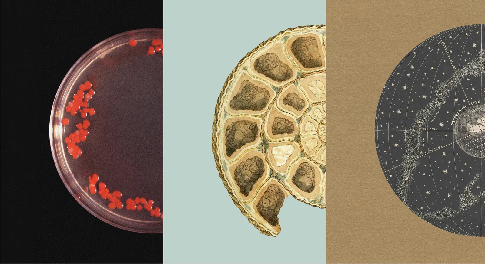
우리는 AI가 인류 역사에서 가장 중대한 기술 가운데 하나라고 믿습니다. 잘 관리된다면 AI는 과학 혁신을 빠르게 앞당기고, 경제 성장률을 크게 끌어올리고, 주요 질병의 치료법을 손 닿는 곳으로 가져오고, 여러 세대에 걸친 인간의 노력에도 풀리지 않던 문제들을 해결할 수 있습니다.
앤스로픽은 이런 혜택을 실현하는 동시에, 이토록 빠르고 강력한 기술 혁명에 따르는 위험을 헤쳐 나가고 막는 것을 목표로 합니다.
앤스로픽에 투자하는 모든 분이 이해해 주셨으면 하는 것이 네 가지 있습니다. AI의 놀라운 잠재력, 우리가 다뤄야 할 위험, 회사를 세우고 세상 속에서 운영하는 앤스로픽만의 방식, 그리고 우리의 행동이 순수하게 이윤만 극대화하는 회사의 행동과 다를 수 있는 지점들입니다.
2020년, 우리 공동창업자 중 네 명이 AI의 스케일링 법칙을 기록한 논문을 함께 썼습니다. 스케일링 법칙은 연산량·데이터·모델 크기·학습 환경을 함께 늘리면 AI의 일반 인지 능력이, 나아가 그 경제적 가치가 빠르게 커진다는 것을 설명합니다. 당시 많은 사람에게는 기계 지능이 이토록 강하게 규모에
좌우된다는 생각이 놀라웠지만, 스케일링 법칙에 근거한 예측은 거듭해서 사실로 드러났습니다.1
이 현상은 컴퓨터 칩의 무어의 법칙과 어느 정도 비슷합니다. 무어의 법칙 아래에서 칩의 연산 능력은 수십 년 동안 12~18개월마다 두 배로 늘었습니다. 무어의 법칙은 개인용 컴퓨터에서 인터넷에 이르기까지 현대 경제를 뒤바꾼 여러 산업의 토대가 되었습니다. 그러나 우리는 기계 인지의 기하급수적 성장이 미칠 영향이 컴퓨터 칩의 기하급수적 성장보다도 훨씬 클 것이라고 믿습니다.
1이 생각은 리처드 서튼(Richard Sutton)의 ‘쓰라린 교훈(bitter lesson)’ 개념과 밀접하게 닿아 있습니다. 순수한 규모가 더 구체적이고 복잡한 AI 학습 방법을 꾸준히 이겨 왔다는 관찰입니다. 다만 규모만이 모델 능력 향상의 유일한 원천은 아닙니다. 같은 연산량으로 (예컨대) 더 높은 능력을 얻게 해 주는 알고리즘 효율(‘연산 배수기[compute multipliers]’)도 큰 역할을 해 왔습니다. 하지만 이런 효율 자체도 스케일링 법칙을 이용해 찾아냅니다. 연구자들은 새로운 아이디어를 시험해 보고, 스케일링 추세를 가장 크게 개선하는 것을 남깁니다.
인지 능력의 기하급수적 성장은 계속될 가능성이 크고, 결국 우리가 ‘데이터센터 안의 천재들의 나라’라고 불러 온 수준에 이를 것이라는 게 앤스로픽의 명제입니다. 소프트웨어, 물리학, 수학, 생물학, 의학, 금융, 경제학, 상거래, 로보틱스, 군사·정보 역량 등 인간이 하는 모든 분야를 바꿔 놓을 수 있는 수백만 개의 가상 에이전트 말입니다. 앤스로픽은 언제나 다른 기업과 함께 일하는 데 가장 먼저 집중해 왔습니다. AI의 비범한 혜택은 대부분 전 세계의 기업과 기관들이 우리 모델을 실제로 배치해 쓰는 방식에서 나온다는 것을 알기 때문입니다.
특히 인간 삶의 질을 높일 잠재력이 큰 몇 가지 쓰임새를 짚어 둘 만합니다.
첫째, 우리는 AI가 생물학과 의학의 발전 속도를 크게 앞당겨 암, 알츠하이머병, 심장병, 희귀 유전 질환, 주요 감염병 등 수천 년 동안 인류를 괴롭혀 온 질병을 치료할 수도 있다고 믿습니다. AI는 과학 연구와 신약 개발의 완전히 새로운 방법을 가능하게 하며, 우리는 더 넓은 과학계에 도움이 될 도구를 개발하는 데 앞장서기를 바랍니다. 앤스로픽은 이미 많은 바이오·제약 기업과 함께 기초 발견과 임상시험 양쪽을 개선하고 있습니다. 제약사 과학자들이 신약 발견 과제를 풀도록 돕는 일부터, 임상시험 보고서를 쓰는 시간을 몇 달에서 몇 분으로 줄이는 일까지입니다.
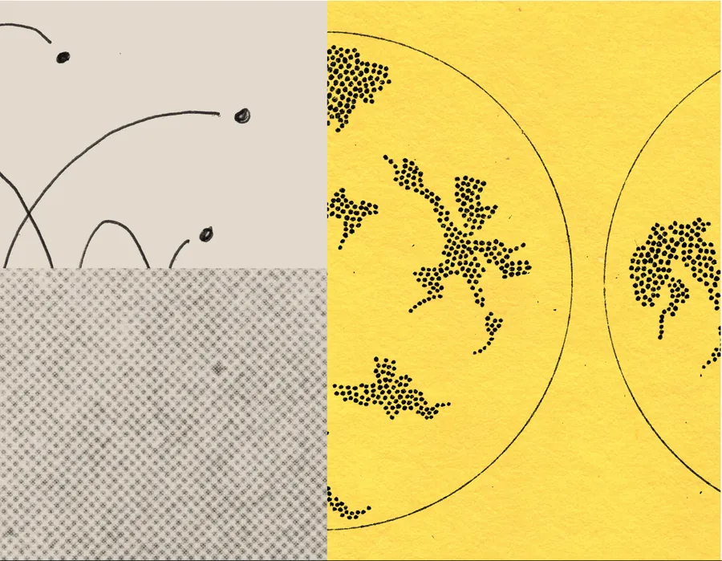
과학을 위한 최고의 도구를 만들려면 우리 팀이 과학 연구와 신약 발견을 직접 해 본 경험이 필요합니다. 우리는 Claude로 생물학적 발견을 직접 해내기 시작했습니다. 그중에는 유전자 편집 같은 새로운 생명공학 도구로 발전할 잠재력이 있을지도 모르는 분자 기계의 발견도 있습니다. 우리는 가까운 미래에 Claude가 훨씬 더 많은 새로운 생물학적 발견을 가능하게 할 것으로 기대하며, 파트너들과 함께 이를 검증하고 분야 전체의 발견 속도를 높이기 위해 협력할 것입니다.
둘째, AI는 경제 성장의 강력한 지렛대가 될 수 있습니다. 범용 기술인 AI는 경제의 모든 부문에서 생산성을 높일 잠재력을 지닙니다. 선진국의 생산성 증가율은 최근 수십 년간 정체됐는데, 일부는 구조적 이유 때문이고 일부는 새로운 아이디어를 찾기가 점점 어려워진 듯하기 때문입니다. AI는 이 흐름을 되돌릴 수 있습니다. AI는 이전에는 자동화하기 어려웠던 업무에서 노동자와 기업의 생산성을 직접 높일 수 있습니다(일부 분석은 이것만으로도 최근의 생산성 둔화를 되돌릴 수 있다고 봅니다). 그러나 AI는 ‘혁신하는 방법의 혁신’이기도 합니다. 기업이 새 제품과 새로운 일하는 방식을 생각해 내는 과정 자체를 개선할 수 있습니다. 이는 경제 성장의 지속적인 가속을, 그리고 성장이 인간의 삶에 가져다줄 수 있는 모든 혜택을 불러올 수 있습니다.
셋째, AI는 이런 혜택을 전 세계로 퍼뜨려 세계 경제 성장률을 높이는 데 도움을 줄 수 있습니다. 오늘날에는 끔찍한 질병의 치료제가 개발되더라도, 더 가난한 지역의 물류·인력·접근성 문제 때문에 필요한 모든 사람에게 늘 닿지는 못합니다. 세계보건기구(‘WHO’)와 세계은행에 따르면 세계 인구의 절반이 넘는 약 46억 명이 여전히 필수 보건 서비스를 이용하지 못합니다. 우리는 AI가 부족한 전문성을 넓히고, 보건 시스템이 기대는 데이터를 튼튼하게 하고, 치료제가 가장 필요한 곳에 닿도록 도움으로써 여기서도 힘이 될 수 있다고 믿습니다.
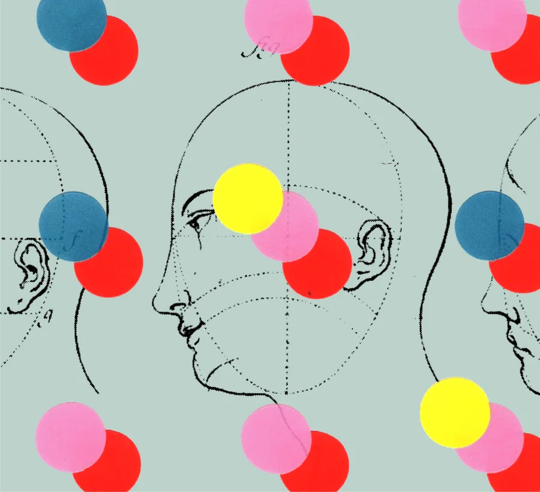
우리는 이미 아프리카에서 말라리아를 비롯한 질병의 역학 모델링을 활발히 함께하고 있습니다. 예를 들어 2026년 콩고민주공화국 에볼라 발병 때 WHO 아프리카 지역사무소는 Claude를 활용해 일일 상황 보고서를 준비하는 시간을 하루 종일에서 한 시간 미만으로 줄였고, 덕분에 팀은 치료 센터를 어디에 둘지 정할 때 질병 모델을 하나가 아니라 여러 개 돌려 볼 수 있었습니다. 우리는 게이츠 재단과 함께 각국 보건부가 자체 데이터로 보건 인력을 배치하고, 공급망을 관리하고, 발병을 감지하도록 돕고 있으며, 우간다에서 아이티, 몽골에 이르는 약 100개 저·중소득 국가의 의사들을 위해 무료 AI 기반 임상 검색을 지원합니다. 국제구조위원회(IRC)와는 Claude로 나이지리아 어린이들의 건강 기록을 디지털화하고 분석해, 현장 인력이 영양실조 위험이 있는 아이를 찾아내고 한정된 자원을 더 알뜰하게 쓰도록 돕는 방법을 찾고 있습니다. 더 넓게 보면, AI는 지금 시장이 약한 곳에서 시장을 튼튼하게 하는 데 도움을 줄 수 있습니다. 2000년대 개발도상국에서 휴대전화가 바로 그 일을 했습니다. 사람들이 가격에 관한 핵심 정보를 얻게 해 교역이 흐르도록 한 것입니다. AI는 전문 지식에 대해 같은 일을 할 수 있습니다. 누구나 변호사, 회계사, 농학자의 지식과 기술을 쓸 수 있게 해 전 세계의 경제 효율을 높이고 성장을 앞당길 수 있습니다.
넷째, AI는 정부 서비스의 질을 높이고 국가의 기술 역량을 키울 수 있습니다. 세무 당국, 사회 서비스, 의료 프로그램, 계획·인허가 — 이런 기능과 이와 비슷한 기능은 시민이 상대하기에 답답한 경우가 많은데, 충분히 강력한 AI가 있으면 모두 근본적으로 개선되고 현대화될 수 있습니다. 우리는 이미 미국 연방정부, 여러 주 정부, 미국의 동맹국들과 아동 서비스, 사회보장 행정, 사이버보안, 정보 수집 같은 분야에서 일하고 있습니다. 유타주에서는 열 개 주 정부 기관의 개발자들이 Claude로 공공 서비스 뒤의 소프트웨어를 현대화하고 있고, 캘리포니아에서는
Claude가 차량관리국(DMV)의 대기 줄을 줄이고 메디케이드 이용자에게 더 나은 서비스를 제공하도록 돕고 있습니다. 영국에서는 구직자들이 정부 서비스를 헤쳐 나가도록 돕고 있습니다. 마찬가지로 AI는 민주주의를 북돋우고 튼튼하게 하는 데 쓰일 수 있습니다. 민주 정부가 시민에게 한 약속을 지키도록 돕고, 민주 제도를 사이버 공격과 외국의 개입으로부터 지키고, 자유 사회가 세계에서 가장 강력한 기술을 이끌도록 함으로써, 지정학적 역사의 궤적을 자유 쪽으로 휘게 하는 것입니다.
이것들이 AI의 쓰임새 전부와는 거리가 멀지만, 더 나은 세상을 만드는 이 기술의 놀라운 잠재력을 보여 줍니다. 우리는 고객과 함께 우리 AI 모델을 적용해 이 분야들과 인간이 하는 다른 수십 개 분야를 바꿔 놓으려 합니다. 그렇게 하는 것은 역사상 가장 큰 경제적 기회일 수 있습니다.
AI를 만든다는 것은 인지 그 자체를 다룬다는 것이며, 그토록 강력한 것은 선뿐 아니라 악에도 쓰일 수 있습니다. 앤스로픽은 가치를 깊이 중시하는 조직이며, 세상이 AI의 혜택을 실현하고 그 위험을 피하도록 돕기 위해 상당 부분 세워졌습니다.
위험은 크게 네 범주로 나뉩니다. 오용, 통제력 상실, 권위주의적 남용, 경제적 혼란입니다.
AI는 해를 끼치려는 이들에게 오용될 수 있습니다. 예를 들어 사이버 공격을 벌이거나 생물학 무기를 설계하는 데 쓰일 수 있습니다. 우리는 긍정적인 쓰임은 살리면서 기술의 오용을 막도록 설계된 엄격한 안전장치와 신뢰 기반 접근 프로그램을 운영합니다. 우리는 모델을 오용하려는 시도를 정기적으로 차단하고, 필요하면 수사기관에 신고하며, 이를 대중에게 투명하게 공개하려고 노력합니다.
AI는 또한 우리(그리고 사용자)가 의도하지 않은 방식으로 스스로 행동할 수 있습니다. 최근 세간의 이목을 끈 사이버보안 사고들이 그 예입니다. 충분히 강력한 AI 시스템에 대한 통제를 잃는 것은 최우선급 세계 안보 위협이 될 수 있습니다. 앤스로픽은 AI 시스템의 통제를 개선하는 여러 방법을 개척해 왔습니다. 여기에는 AI 모델 내부를 들여다보며 모델이 어떻게 행동하는지 이해하려는 기계적 해석 가능성, 그리고 특정한 문서인 Claude의 헌법에 맞게 행동하도록 AI 모델을 훈련하는 헌법적 훈련이 있습니다. 우리는 또한 수백 쪽에 이르는 모델 시스템 카드를 발간해, 모델 안전에 관한 우리의 진척을 대중이 볼 수 있게 합니다. 사고를 공개하고, 업계 전반에서 이 위험을 줄이는 데 도움이 되는 연구 결과를 발표하는 것은 오래된 우리의 관행입니다.
권위주의 정부는 AI로 첨단 감시 국가를 만들고, 억압을 심화하고, 스스로를 훨씬 더 몰아내기 어렵게 만들 수 있습니다. 우리는 자유 사회와 협력해 권위주의적 남용에 맞서는 균형추가 되고 자유와 민주주의를 북돋우는 데 힘쓰고 있습니다.
마지막으로, AI의 놀라운 경제적 가치는 경제적 혼란을 동반할 수 있습니다. 과거 기술에서 일어났던 일과 비슷하지만 규모는 더 클 것입니다. 우리는 이 혼란을 연구하는 데 힘쓰고 있습니다. 우리는 경제 전반에서 Claude가 어떻게 쓰이는지에 관한 종합 정보를 제공하는
경제 지수를 운영하며, 우리 연구자들은 AI가 앞으로 미칠 수 있는 영향을 예측하는 거시경제 모델을 만듭니다. 우리는 또한 더 과감한 조치가 필요하리라 보고, 경제 변화에 대응하는 여러 방법을 연구하도록 정부와 협력하는 데 이미 2억 달러를 약정했습니다. 어떤 개입이 효과적인지에 관한 증거를 찾으려는 것입니다. 그래야 사회가 실제로 경제적 혼란을 맞닥뜨렸을 때, 대응에 쓸 올바른 도구를 우리가 미리 만들고 그 위험을 줄여 두는 데 기여한 셈이 됩니다. 우리는 앞으로 이 자금을 크게 늘릴 것으로 예상합니다.
우리는 세상이 이런 위험을 이해하도록 돕고, 우리 AI 모델에서 위험이 생길 때 이를 막거나 줄이며, 정부와 업계의 다른 이들과 함께 사회 차원에서 위험에 대처하는 것을 우리 자신의 책임으로 여깁니다.
방금 설명한 성질을 지닌 기술을 헤쳐 나가려면 일반적인 회사와는 매우 다른 접근이 필요합니다. 경제학자들은 회사와 고객 사이의 거래 밖에서 사회에 미치는, 그래서 시장이 온전히 보상하거나 벌하지 못하는 효과를 외부효과라고 부릅니다. 예를 들어 공장이 만든 오염의 비용, 또는 한 회사의 연구 돌파구를 다른 회사들이 공짜로 딛고 올라서는 가치 같은 것입니다. AI는 긍정적으로도 부정적으로도 유난히 큰 외부효과를 지닙니다. 긍정적 외부효과를 키우고 부정적 외부효과를 막는 일은 영리 기업의 자연스러운 유인, 그리고 상장 기업의 표준적인 지배구조와 어느 정도 긴장 관계에 있습니다.
창업자이자 경영자로서 우리는 기업가적 자본주의가 인류에게 막대한 혜택을 가져다주는 힘을 깊이 믿습니다. 그러나 AI처럼 중대한 기술에서는 기업가적 자본주의가 공공선을 지키고 그 과실을 되도록 널리 나누는 장치들로 균형을 잡고 보강되어야 한다고도 믿습니다. 문화에서 회사 구조에 이르기까지 앤스로픽을 만든 방식의 모든 것은, 상황이 요구할 때 우리가 공익을 위해 행동할 수 있도록 설계되었습니다.
그 출발점은 앤스로픽의 문화입니다. 우리 문화는 공익, 정직과 신뢰, 자존심을 내세우지 않는 협업, 그리고 통하는 단순한 방법에 끈질기게 집중하는 태도를 중심으로 세워졌습니다. 앤스로픽 면접을 보는 모든 사람은 이런 자질을 평가하도록 설계된 과정을 거치며, 우리는 이런 자질을 보여 주지 못한 지원자라면 기술적으로 아무리 뛰어나도 기꺼이 뽑지 않습니다.
앤스로픽은 그 영향력에 비해 작은 조직을 유지하고 있습니다. 2026년 9월 30일 기준 앤스로픽 직원 1인당 최근 12개월 매출은 660만 달러가 넘으며, 이는 미국 최대 상장 기업들의 평균보다 의미 있게 높습니다. 우리는 사명을 공유하는 끈끈한 팀이 그 규모로 짐작되는 것보다 훨씬 많은 것을 이룰 수 있다고 믿으며, 커 가면서도 이런 성격을 지켜 갈 생각입니다.
입사하는 모든 직원에게는 기부 매칭이 제공됩니다. 직원이 자선 목적으로 기부하겠다고 서약한 지분 1주마다 앤스로픽이 1주를 추가로 만들어 맞춰 주고, 이 주식도 같은 방식으로 기부가 서약됩니다. 이 글을 쓰는 현재 전체 직원의 절반 남짓이 지분의 적어도 일부를 서약했습니다.2 우리 일곱 명도 모두 앤스로픽 개인 지분의 80%를 자선 목적으로 기부하겠다고 서약했습니다.
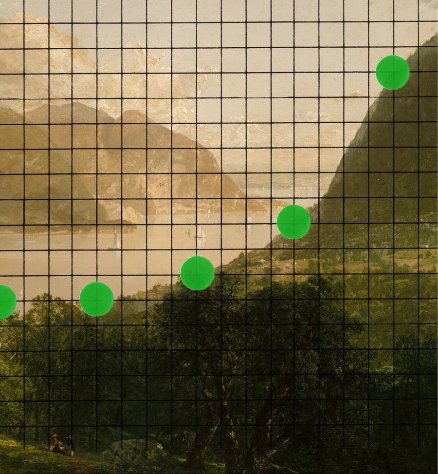
공동창업자이자 리더로서 우리는 철저한 내부 정직을 지향하며, 직급과 상관없이 모두가 활발하고 열린 토론을 하는 문화를 갖고 있습니다. 우리 CEO 다리오는 보통 2주마다 회사 전체 앞에 서서 자신이 고민하는 결정들과 업계 상황을 터놓고 이야기합니다. 다른 공동창업자와 리더들도 각자 맡은 영역에서 자주 같은 일을 합니다. 직원들은 회사 전체에 열려 있는 토론 게시판에서 우리 사명의 복잡함 때문에 생기는 트레이드오프를 두고 논쟁합니다. 이 열린 문화는 우리의 인재 밀도가 높고 인재 유지율이 업계 최고 수준을 지키는 이유 중 하나입니다. 우리 일곱 명은 모두 아직 회사에서 일하며, 그래서 앤스로픽은 창업팀 전원을 지킨 유일한 주요 AI 기업입니다. 첫 100명의 직원 가운데 4분의 3 이상이 여전히 이곳에서 일하고, 떠난 사람들도 다른 이에게 앤스로픽을 추천하거나 다시 돌아오는 경우가 많습니다. 우리 통계에 따르면, 붙잡고 싶었지만 떠난 직원 가운데 19%가 이후 앤스로픽으로 돌아왔습니다.
그러나 문화만으로는 충분하지 않습니다. 공식적인 지배구조 약속도 중요합니다. 우리는 상업적 성공과 공공선 사이의 균형을 잡도록 지배구조를 설계했습니다. 앤스로픽은 공익법인입니다. 즉 우리 이사회는 주주의 재무적 이익을, 우리의 공익 사명 및 우리의 행위로 중대한 영향을 받는 이들의 이익과 함께 저울질할 책임을 집니다. 또한 우리 지배구조는 권한을 세 집단이 나눠 갖게 합니다. 공동창업자, 직원, 그리고 장기이익신탁(‘LTBT’)입니다. LTBT는 앤스로픽에 재무적 이해관계가 없는 독립 기구로, 회사가 장기적인 공익 사명을 지키도록 하는 책임을 맡습니다. 그 구성원들은 국가안보, 경제, 세계 보건, 과학 등 AI의 긍정적·부정적 외부효과가 가장 크게 나타날 만한 분야의 전문성을 갖추고 있습니다.
22024년 5월 이전에 입사한 직원에게는 보유 주식의 최대 50%까지 기부 매칭을 제공했습니다. 70% 넘게 서약했고, 25% 넘게는 50% 전부를 서약했습니다. 2024년 5월 이후 입사자에게는 보유 주식의 최대 25%까지 기부 매칭을 제공했고, 50% 가까이가 참여했으며 30% 가까이가 25% 전부를 서약했습니다.
LTBT는 이사 일곱 명 가운데 네 명을 선임하며, 그중 한 자리는 지명과 해임에 관한 보호장치(회사와 LTBT의 의견이 다를 때 직원 투표 포함)를 따릅니다. 우리 공동창업자들은 나머지 이사 세 명을 선임할 권한을 갖습니다. 이렇게 늘어난 우리의 의결권은 영구적이지 않으며, 의결 주체에 남은 우리가 세 명보다 적어지면 의결권은 보통주 주주에게 넘어갑니다. 이 투자설명서는 그 구조를 더 자세히 설명합니다.
개인 기부와 별도로, 우리는 시장 논리가 유인하는 수준을 넘어 AI의 비시장적 혜택을 늘리고 위험을 줄이는 데 우리 자원의 측정 가능한 일부를 따로 떼어 두고 있습니다. 기업공개(IPO)에 앞서 우리는 회사 지분의 5%를 공공선에 쓰는 기금으로 떼어 둡니다. 또한 직전 출연 때보다(첫 기준은 IPO 공모가) 주가가 지속적으로 50% 오를 때마다 이사회 재량으로 2%를 추가로 떼어 둘 것입니다. 이 5%(또는 그 이상)의 약정은 과학과 의학, 생물보안, 세계 보건, 경제 연구 프로그램부터 앤스로픽 지분의 경제적 가치를 미국 전역이나 전 세계에 널리 나누는 일까지 폭넓은 사업에 쓰일 수 있습니다.3
지분 희석을 걱정하는 투자자께 말씀드리면, 이 계획의 규모와 구조는 과거 일부 상장 기업이 경영진 보상 패키지로 내놓았던 범위를 벗어나지 않습니다. 우리는 다른 회사 리더들이 경영진 보상으로 동기를 얻는 만큼 앤스로픽의 리더십과 직원들도 이 구조로 동기를 얻으리라 기대합니다.
이 모든 것을 말씀드렸지만, 앤스로픽의 직원과 리더들은 우리의 공익 목표가 상업적 성공과 고객의 성공으로 뒷받침된다는 것을 이해하고 있습니다. 사업 성장과 공공에 대한 영향을 함께 이루는 것은 창립 이래 우리가 지켜 온 균형이며, 우리는 둘 다 가능하다는 것을 보여 준 확실한 실적이 있습니다. 세상에 긍정적인 영향을 미치는 우리의 능력은 성공한 회사로서 우리가 지닌 영향력과 위상에 비례해 커집니다.
우리의 변화 이론은 언제나 우리가 위를 향한 경쟁(race to the top)이라고 부르는 것이었습니다.
공익을 위해 행동하면서도 상업적으로 성공할 수 있다는 것을 보여 줌으로써, 다른 회사들도 그렇게 하도록 설득하려는 것입니다. 우리는 실수를 할 것이고, 다른 이들이 우리에게서 배우는 만큼 우리도 그들에게서 배우리라 예상합니다. 경쟁사들이 우리의 관행을 받아들여 더 낫게 만든다면 우리는 그것을 성공으로 여깁니다.
IPO 절차를 시작하기 전에 우리는 과거 비슷한 과정을 거친 많은 기업 리더와 이야기를 나눴습니다. 여러 사람에게서 조금씩 다른 형태로 들은 조언 하나가 마음에 남았습니다. 회사가 실제 가치보다 단 1달러라도 더 비싸게 평가받게 두지 마라. 회사가 지킬 수 없는 기대나 회사가 어떻게 행동할지에 대한 잘못된 예측을 근거로 사람들이 주식을 사는 것은 매우 위험하다는 뜻이었습니다. 이는 사실 앤스로픽의 지침 중 하나인 약속은 적게, 결과는 넘치게와 매우 닮았습니다. 채용할 때 우리가 하는 일과도 비슷합니다. 우리는 지원자에게 안티셀(anti-sell)을 합니다. 우리와 잘 맞지 않는 사람에게는 매력이 없게, 우리가 뽑고 싶은 유형의 사람에게는 매력 있게 일부러 설계한 소개입니다.
이런 정신에서, 우리는 AI라는 분야(그리고 특히 앤스로픽)가 역사상 가장 큰 경제적 기회 가운데 하나라고 믿지만, 우리의 의사결정이 투자자의 기대와 어긋날 수 있는 지점을 분명히 밝혀 두는 것도 중요하다고 믿습니다. 이는 두 범주로 나뉩니다. AI의 거침없는 기하급수적 궤적에서 나오지만 따로 떼어 보면 이상하거나 파격적으로 보이는 사업상의 베팅, 그리고 공공선과 적절히 균형을 맞추기 위해 이윤 극대화에서 벗어나는 결정입니다.
3이 서약은 앞서 말한 앤스로픽 공동창업자 전원의 개인 지분 80% 기부 서약, 그리고 기부 매칭 제안을 받아들인 직원들의 서약에 더해지는 것입니다. 두 서약은 2026년 6월 30일 기준 완전희석 주식의 각각 9%와 8%에 해당합니다.
첫 번째 범주에서 앤스로픽은 처음 보기에 무책임할 만큼 커 보일 수 있는 선행 투자(특히 컴퓨트)를 자주 할 것입니다. 이는 스케일링 법칙에 근거해, AI의 경제적 가치가 기하급수 곡선 위에 있고 따라서 가까운 미래에 우리 제품이 지닐 기대 경제 가치가 지금의 가치보다 훨씬 클 것이라는 믿음에서 나옵니다. 우리 앞의 기회를 온전히 잡으려면, 더 천천히 변하는 기술 환경에서 운영되는 사업보다 더 공격적으로 투자해야 합니다. 제약 회사가 유용한 비유입니다. 연구개발에는 흔히 매우 큰 선행 투자가 필요하고, 그 투자는 나중에 성공한 약에서 나오는 수익에 비추어 보아야 비로소 타당해집니다. 앤스로픽에서는 비슷한 과정이 훨씬 빠르게, 훨씬 큰 규모로 일어나고 있습니다.
우리는 하방 보호를 위해 상방 일부를 포기할 용의가 언제나 있습니다. 예를 들어 수요를 과대평가했을 때 남는 컴퓨트를 덜어 낼 방법을 찾거나, 오차를 견딜 여력을 키우기 위해 컴퓨트 효율과 운영 효율을 높이거나, 일시적인 수요 둔화로부터 스스로를 지키기 위해 필요할 때 자본을 조달하는 식입니다. 그러나 AI의 기하급수적 성장이 주는 극단적인 상방 가능성에는 어느 정도의 위험이 본래 따릅니다. 대체로 우리는 대담하되 정신은 똑바로(bold but sane) 하는 것을 목표로 삼고, 성공한 베팅의 실적으로 신뢰를 얻고자 합니다.
이와 관련해 우리는 끊임없이 사업을 새로 만들어 가며, 기존 제품의 경제적 가치를 압도하는 것을 목표로 하는 새로운 종류의 제품을 내놓을 것입니다. AI 인지 능력의 발전은 불과 몇 달 전 모델로는 불가능했던 새로운 종류의 제품을 끊임없이 열어 줍니다. 예컨대 AI 챗봇은 2022년 무렵, AI 코딩 에이전트는 2025년 무렵 쓸 만해졌고, 일반 지식 노동과 과학적 발견을 위한 AI 에이전트는 2026년에 점차 쓸 만해지고 있습니다. 일반적인 사업에 비해 우리는 대체로 현재 제품과 사업 모델을 굳히는 데는 노력을 덜 쓰고, 새로운 것을 정의하는 데 더 많은 노력을 쓸 것입니다. 이 기술의 가장 큰 가능성이 거기에 있기 때문입니다.
두 번째 범주(이윤 극대화에서 벗어나는 결정)에서 우리는 결정적인 순간에는 상업적으로 손해를 보더라도 우리의 가치를 지키겠다고 약속합니다.
예를 들어 당시 우리가 만든 가장 뛰어난 모델인 Claude Mythos Preview를 훈련했을 때, 우리는 그 능력, 특히 사이버보안 능력이 새로운 안전장치 없이 널리 공개하면 상당한 위험을 낳을 수준까지 발전했다고 판단했습니다. 그래서 일반 공개를 하지 않기로 했고, 추가 안전장치를 갖춘 뒤에야 그 능력을 (Claude Fable 5로) 대중에게 내놓았습니다. 이 지연은 상당한 매출을 포기하고 경쟁사에 자리를 내준다는 뜻이었지만(우리는 사이버 방어자들에게 약 1억 달러어치의 Claude 크레딧도 무상으로 제공했습니다), 우리는 그것이 옳은 결정이었다고 믿으며, 모델이 더 유능해질수록 비슷한 결정을 다시 마주할 것으로 예상합니다.
우리는 또한 Claude에 광고를 넣지 않겠다고 약속했습니다. 광고는 현대 인터넷의 상당 부분을 먹여 살리며, 우리에게도 큰 수익원이 될 가능성이 큽니다. 그러나 사람들은 가장 중요한 일과 가장 개인적인 질문을 Claude에게 가져오며, 우리는 Claude의 유일한 동기가 그들에게 도움이 되는 답을 주는 것이기를 바랍니다. 광고가 회사 매출 목표의 일부가 되면 사용자 참여를 최대화하라는 압력이 커지기 쉽습니다. 우리는 그 압력을 Claude에 들이지 않기로 했습니다.
공익을 저울질하는 일이 특히 중요한 곳은 AI 발전의 속도입니다. 빨리 움직이면 AI의 혜택이 더 일찍 오지만, 너무 빨리 움직이면 AI 시스템을 안전하게 만드는 세상의 능력을 앞질러 버릴 수 있습니다. AI를 안전하게 만들려면 앤스로픽(그리고 이상적으로는 업계 전체)이 AI 능력이 복리로 쌓이는 극도로 빠른 속도를 조절해야 할 수 있습니다. AI 시스템이 스스로를 만들어 가며 그 속도를 끌어올릴 때는 더욱 그렇습니다. 발전은 절대적으로는 여전히 매우 빠르겠지만(어쩌면 지금보다 훨씬 빠르겠지만), 경쟁에서 불리해지더라도 시스템을 더 안전하게 만들려고 가능한 속도보다 천천히 나아가기로 하는 때가 있을 수 있습니다.
우리 모두는 AI의 기하급수적 성장이 막대한 가치를 만들어 내어, 장기적으로는 우리가 사명의 일부로 감수하는 어떤 단기적인 경제적 희생보다도 훨씬 클 것이라고 진심으로 확신합니다. 우리는 또한 공익을 위한 우리의 결정 가운데 일부가 고객, 정부, 직원, 대중 전반의 신뢰와 신용을 높여 장기적으로 사업에도 좋을 수 있다고 생각합니다. 물론 그것이 우리가 그런 결정을 내리는 궁극적인 이유는 아닙니다. 그럼에도 우리는 우리의 의사결정에 대해 솔직하고, 기대치를 적절히 정해 둘 필요를 느낍니다. 관련된 모든 사람이 우리가 어떻게 운영하는지 같은 이해를 공유하고 우리의 선택에 놀라지 않는다면, 우리와 투자자 모두 더 순탄한 여정을 걷게 될 것입니다.
그러나 더 넓게는, 우리 주식을 갖게 될 분으로서 여러분이 주식 매입을 순전히 거래로만 생각하지 않으시기를 권합니다. 대신 더 큰 무언가의 일부가 될 기회로 보아 주시기를 바랍니다. 기계 지능의 출현은 인류 역사에서 손꼽히는 결정적 순간 중 하나입니다.
그 순간의 한가운데에 선 회사 가운데 하나로서, 우리에게는 그 순간을 더 나은 쪽으로 빚어 갈 드문 기회가 있습니다. 우리의 목표는 인류가 이 기술적 진화를 안전하게 헤쳐 나가고, 발견의 새 지평을 열고, 기적의 시대를 불러오도록 돕는 것입니다. 기관이든 개인이든 우리 주식을 가진 모든 분은 그 노력의 일부가 됩니다. 이 일을 끝까지 해내려는 우리의 포부를 여러분도 함께하시기를 바랍니다.
사업(Business) 장의 ‘우리의 고객’ 부분과, 그 뒤에 이어지는 고객 사례 지면입니다. 사례 지면에는 원문에 쪽 번호가 찍혀 있지 않아 순서대로 번호를 붙였습니다.
Claude는 3대 클라우드 플랫폼 모두에서 각 플랫폼의 전용 AI 서비스 계층(Amazon Bedrock, Gemini Enterprise Agent Platform, Microsoft Foundry)을 통해 제공된다. 덕분에 조직은 이미 쓰고 신뢰하는 인프라 안에 우리 모델을 배치할 수 있고, 기업은 배치의 유연성을 얻으면서 특정 공급사에 묶이는 일을 피할 수 있다.
전 세계 조직이 Claude에 기대고 있다. 우리는 최대 기업부터 AI 네이티브 기업, 정부·연구 기관, 프로슈머까지 폭넓은 고객을 상대한다.
2026년 9월 30일 기준, 최근 12개월(TTM) 매출 10만 달러 이상인 우리 고객에는 포춘 10대 기업 전부, 포춘 500대 기업의 50% 이상, 글로벌 2000대 기업의 30% 이상이 들어 있다. 산업 전반에서 기업들은 핵심 업무의 실제 운영 흐름에 Claude를 배치한다. 예를 들어 보험 인수 심사, 생명을 살리는 약의 임상 보고서 작성, 사이버보안 위협의 탐지와 대응, 자산운용사의 포트폴리오 분석 같은 일이다. Claude는 믿을 수 없는 AI의 대가가 감당할 수 없을 만큼 크고 신뢰를 나중에 덧붙일 수 없는, 규제가 강한 산업에서 특히 깊이 채택됐다.
또한 선도적인 AI 네이티브 기업들은 Claude 위에서 차세대 코딩 도구, 디자인 플랫폼, 생산성 애플리케이션을 만든다. 정부와 연구 기관도 재료과학에서 에너지 안보에 이르는 일에 Claude를 쓰며, 사명 중심 조직들은 과학 연구, 임상 업무, 공공 혜택 전달에 걸리는 예상 기간을 Claude로 줄인다.
우리의 고객 기반은 고객 관계의 수와 규모 모두에서 빠르게 커졌고, 조직들은 처음의 활용 사례에서 전사 차원의 실제 운영 배치로 넓혀 가고 있다. 2026년 9월 30일 기준 TTM 매출 10만 달러 이상 고객은 11,900곳이 넘어, 2025년 9월 30일 기준 950곳 남짓에서 크게 늘었다.
우리 고객은 크게 기업과 프로슈머 두 범주로 나뉜다.
우리 기업 고객에는 AI를 대규모로 배치하는 다양한 조직이 있다. 제품을 만드는 AI 네이티브 스타트업부터, 업무 흐름 하나가 실제 운영에 닿기 전에 기업 수준의 보안·거버넌스·규정 준수를 요구하는 세계 최대 조직까지다. 우리는 이 전 범위를 하나의 조합형 플랫폼으로 상대한다. 최첨단 모델에 막힘없이 접근하게 하는 동시에 고객이 요구하는 통제 기능, 곧 통합 로그인(SSO), 감사 기록, 데이터 보존 정책, 역할 기반 접근 제어, 기존 클라우드 인프라 안의 네이티브 배치를 제공한다.
소프트웨어 개발자는 여전히 기업 안에서 채택을 이끄는 핵심 세력이다. 이들은 고객이자, 우리 플랫폼 위에 세워지는 애플리케이션의 설계자이자, 조직 전체 채택을 이끄는 내부 옹호자다. 개발자들은 Claude Code와 Claude Platform으로 실제 운영 수준의 코드를 더 빨리 작성·디버그·배포한다. 시스템을 설계하고, 기능을 구현하고, 에이전트형 업무 흐름을 만들고, 예전엔 며칠 걸리던 복잡한 문제를 몇 시간 만에 푼다. 이런 실제 운영 배치는 실제 기업 부하에서만 드러나는 거버넌스·신뢰성·연동 요구사항을 드러내고, 이것이 우리 로드맵으로 돌아오는 피드백이 되어 출시 때마다 고객 관계를 깊게 한다.
연구자, 개발자, 애널리스트, 작가 같은 지식 노동자는 Claude Pro와 Claude Max를 구독해 분석 초안 작성, 연구 종합, 코드 작성·검토, 재무 모델 구축, 업무 자동화 같은 복잡한 인지 작업을 한다. 개발자가 아닌 프로슈머는 Claude Cowork로 코드를 쓰지 않고도 여러 애플리케이션에 걸친 에이전트형 업무 흐름을 만들어, 예전엔 몇 시간의 수작업이 필요하던 일을 몇 분 만에 해낸다.
프로슈머는 우리의 가장 이른 채택자이자 흔히 가장 안목이 높은 사용자다. 이들은 모델이 나온 지 몇 시간 안에 기능을 시험하고, 최신 Claude를 우리가 예상하지 못한 쓰임새에 밀어 넣으며, Claude 모델의 다음 버전을 다듬게 하는 경계 사례와 실패를 찾아낸다.
Claude Code의 채택은 기업 구매팀이 이 범주를 검토하기도 전에 자율 코딩 에이전트의 잠재력을 알아챈 개별 개발자들에게서 시작됐다. Claude Code는 이제 많은 기업 엔지니어링 조직에서 기본 선택이 되어 가고 있다.
프로슈머는 강력한 ‘깔때기 입구’ 엔진 역할을 한다. Claude의 가치를 직접 경험한 개인이 조직 안에서 옹호자가 되어, 개인 사용에서 팀 전체로, 결국 조직 전체 배치로 빨라지는 채택의 씨앗을 뿌린다는 것을 우리는 꾸준히 보아 왔다.
고객은 크게 세 가지 방식으로 Claude의 가치를 얻는다. 더 생산적인 직원, 더 빠른 프로세스, 제품에 내장된 지능이다. 이 결과들은 같은 지능이 다르게 드러난 것이며, 모두 같은 모델과 기본 구성요소를 바탕으로 한다.
더 생산적인 직원. 채택은 대부분 여기서 시작된다. 한 사람이 최첨단 AI 모델이 자기 결과물에 미치는 영향, 예컨대 몇 시간짜리 재무 분석이나 코드 리뷰가 몇 분 만에 끝나는 것을 겪고, 그 확신이 첫 사용자에서 그 팀으로, 한 팀에서 회사 전체로 퍼진다. 소프트웨어 개발에서는 Claude Code가, 더 넓은 지식 노동자에게는 Claude Cowork가 이 일을 한다. Claude Enterprise 요금제는 조직 규모의 채택을 뒷받침하는 거버넌스·보안·관리 기능을 제공한다.
더 빠른 프로세스. 채택이 깊어지면 Claude는 직원이 이따금 물어보는 도구에서 조직이 그 위에서 돌아가는 기반으로 바뀐다. 조직이 자신의 데이터, 시스템, 관행, 과거 작업 등 더 많은 업무 흐름을 Claude에 녹여 넣을수록 플랫폼의 가치는 커진다. Claude는 그렇게 쌓인 맥락을 바탕으로 다음에 자동화할 만한 업무 흐름을 제안할 수 있어, 배치를 거듭할수록 드는 수고가 줄어든다.
내장된 지능. 가장 깊은 단계에서 Claude는 운영상의 우위에서 상업적 우위로 넘어간다. 제품팀은 Claude Platform 위에서 최첨단 AI를 자사 제품에 넣는다. 고객 응대 에이전트, AI 네이티브 기능, 그리고 AI 없이는 성립하지 않던 완전히 새로운 제품군까지다. Claude는 조직이 쓰는 도구이자, 그 조직이 자기 고객에게 전하는 가치의 재료다.
세 차원 모두에서 확장의 상당 부분은 새 배치를 거의 또는 전혀 필요로 하지 않는다. Claude 모델의 새 버전은 기존 활용 사례의 성능을 높이도록 설계된다. 직원은 더 질 높은 결과물을 내고, 녹여 넣은 프로세스는 더 정확하고 안정적으로 돌아가며, 내장된 제품은 최종 사용자에게 더 많은 가치를 준다. 그 결과 고객은 새 영업 주기나 구매 결정 없이도 사용량을 늘리고, 더 높은 구독 등급을 쓰고, 더 많은 업무 흐름을 플랫폼에 올릴 수 있다.
채택 속도가 빠르지만, 우리는 최첨단 AI 기회를 파고드는 아주 초기 단계에 있다고 믿는다. 오늘 Claude를 쓰는 대부분의 기업은 Claude가 지금 다룰 수 있는 일의 범위, 그리고 앞으로 다룰 수 있다고 우리가 믿는 범위에 비하면 적은 수의 팀과 활용 사례에만 Claude를 배치했다. 우리는 전 세계 지식 노동자 대부분이 아직 최첨단 AI를 써 보지 않았다고 믿는다. Claude 모델의 새 버전이 능력을 높일 때마다 플랫폼에서 가능한 작업과 업무 흐름의 범위는 계속 넓어진다. 우리가 플랫폼을 운영하고 애플리케이션도 제공하므로, 모델의 발전은 여러 경로를 통해 동시에 고객에게 닿는다.
액센츄어는 세계 주요 기업들이 디지털 핵심 기반을 구축하고 AI의 힘을 끌어내 스스로를 새롭게 바꾸도록 도우며, 이를 통해 여러 산업의 조직이 빠르게 가치를 만들어 내게 한다. 이 회사는 80만 명이 넘는 인력의 역량에 자체 자산과 플랫폼, 깊은 업무 프로세스·산업 전문성, 선도적인 협력 생태계 관계를 결합해, 처음부터 끝까지 아우르는 솔루션과 측정 가능한 성과를 대규모로 제공한다.
2025년 12월, 액센츄어와 앤스로픽은 파트너십을 대폭 확대한다고 발표하고, 기업들이 AI를 전면 도입하도록 돕는 ‘액센츄어 앤스로픽 비즈니스 그룹(Accenture Anthropic Business Group)’을 만들었다. 액센츄어는 자사부터 AI를 도입해, 수만 명의 개발자에게 Claude Code를 배포하고 회사 전반으로 Claude Enterprise 사용자를 늘렸다. 액센츄어에는 앤스로픽의 기초·기술·전문 인증 과정을 거친 Claude 인증 실무자가 1만 8,000명 넘게 있다.
액센츄어 내부의 변화와 함께, 액센츄어 앤스로픽 비즈니스 그룹은 같은 방식을 고객사에도 적용한다. 고객사 현장에 직접 파견돼 Claude를 고객 환경에 바로 심는 엔지니어(포워드 디플로이드 엔지니어)도 두고 있다. 액센츄어는 Claude 전문 조직(Center of Excellence)과 이노베이션 허브를 만들어, 글로벌 2000 기업 고객이 활용 사례를 시제품으로 만들어 검증해 볼 수 있게 했다. 두 회사는 CIO(최고정보책임자)가 자사 엔지니어링 조직에 AI를 들이도록 돕는 서비스도 함께 개발하고 있다.
“앤스로픽과의 이번 파트너십 확대는 정말 기대되는 일입니다. 고객사들이 AI를 시험 삼아 써 보는 단계를 넘어, 회사 전체를 새롭게 바꾸는 촉매로 활용하는 단계로 더 빨리 넘어가도록 도울 겁니다.”
줄리 스위트, 액센츄어 회장 겸 CEO
액센츄어와 앤스로픽은 금융 서비스, 생명과학, 헬스케어, 공공 부문처럼 규제가 많은 산업을 위한 산업별 서비스도 만들고 있다. 사이버보안 분야에서는 Claude를 추론 엔진으로 쓰는 보안 제품 Cyber.AI로 이미 그 결과물이 나오고 있다. 액센츄어는 자사의 전 세계 IT 인프라에 Cyber.AI를 배치해 애플리케이션 1,600개와 API 50만 개 이상의 보안을 돕고 있으며, 스캔 처리 시간을 며칠에서 1시간 미만으로 줄이고 테스트 커버리지를 약 10%에서 80% 이상으로 끌어올렸다.
액센츄어와 앤스로픽의 파트너십은 이미 고객사에서 성과를 내고 있다. 미국의 한 대형 브로드밴드 업체는 기업 고객을 상대로 한 마케팅과 영업 방식을 Claude 위에서 새로 짰다. 첫해에 이 고객사는 AI 투자 대비 7배의 수익과 55% 빨라진 시장 출시 속도를 보고했다. 영업 잠재고객(리드) 하나를 검증하는 비용은 86% 줄었고, 정확도는 13%에서 97%로 올랐다.
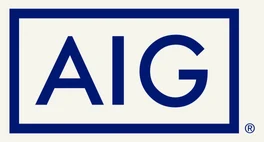
2023년부터 고객AIG는 200개가 넘는 국가와 관할 지역에서 기업과 개인이 자산을 지키고 위험을 관리하도록 돕는 세계적인 보험 그룹이다. 2023년 AIG는 보험 중개인, 고객, 제3자로부터 온 갖가지 형식의 데이터를 사람이 손으로 받아 검토하느라 인수 심사(언더라이팅) 과정이 느려지고 있다는 점을 깨달았다. 해당되는 청약을 모두 검토할 여력도 없었는데, 회사는 이것을 놓친 성장 기회라고 봤다. 그래서 인수 심사 사업의 중심에 AI를 심기로 했다.
AIG는 규제가 매우 엄격한 산업 안에서 업무 흐름을 만들기 위해 앤스로픽과 협업했다. 회사는 Claude 2.0 모델부터 시작해 Underwriting by AIG Assist를 만들었다. 이 도구가 배치된 사업 부문에 들어오는 모든 청약의 데이터를 처리하고 분석하려는 목적이었다. 예전에는 언더라이터가 위험 요약을 쓰기 전에 데이터를 모으는 데만 몇 주를 썼지만, 이제는 Claude가 만든 잘 정리된 위험 요약과 전체 감사 기록을 들고 검토를 시작할 수 있다.
Underwriting by AIG Assist가 배치된 곳에서는 청약 검토 시간이 90% 넘게 줄었고, 해당되는 청약을 100% 검토할 수 있게 됐다. 회사의 북미 최대 사업 가운데 하나인 AIG 렉싱턴 중견기업 재산보험 사업부에서는 Underwriting by AIG Assist 덕분에 언더라이터들이
1. 2026년 3월 31일 기준
“우리가 AI를, 그리고 앤스로픽 같은 파트너와 하는 일을 바라보는 방식은 단순합니다. 고객과 동료에게 가치를 만들어 내야 한다는 겁니다. 우리가 만드는 모든 업무 흐름은 동료들이 더 빠르고, 더 똑똑하고, 더 일관되게 일하도록 도우면서 고객의 경험과 결과도 좋아지게 해야 합니다. 그건 곧 우리가 모시는 사람들과 기업들에게 더 빠른 속도, 더 정교한 인수 심사, 더 신속한 보험금 청구 서비스, 더 짧은 처리 시간, 그리고 더 큰 안심을 드린다는 뜻입니다.”
에릭 앤더슨, AIG 사장 겸 CEO
2026년 3월 31일 기준으로 30% 넘게 더 많은 청약을 검토하고, 55% 더 빠르게 견적을 낼 수 있게 됐다.
지난 1년 동안 AIG는 Underwriting by AIG Assist를 8개 사업 부문으로 넓혔고, 회사 전체로 계속 확대하고 있다. 회사는 보험금 청구 조직에도 Claude를 들였다. 초기 시범 운영에서 Claims by AIG Assist는 보험금 청구가 접수된 뒤 AIG가 고객에게 응답하기까지 걸리는 시간을 며칠에서 몇 시간으로 줄였고, 보장 범위 검토는 몇 시간에서 몇 분으로 줄였다. 또 AIG는 규제를 받는 보험사에 필요한 거버넌스(통제) 장치와 함께 Claude Enterprise를 통해 소프트웨어 엔지니어들에게 Claude Code를 제공하는 방안도 검토하고 있다.
AIG가 탐색하는 또 다른 분야는 앤스로픽의 도움을 받아 만들고 배치하는, 특정 목적에 맞춘 에이전트 팀이다. 이런 팀은 인수 심사 팀이 할 수 있는 일을 크게 늘릴 수 있다. 예를 들어 검토 중인 한 시나리오에서는 에이전트 하나가 청약을 받아 데이터를 뽑아내고, 다른 하나는 인수 심사 지침에 비춰 위험을 점검하고, 세 번째는 포트폴리오 목표와 비교해 가격을 따져 보며, 협업 에이전트가 이들의 작업을 하나로 모은다. 모든 결정은 언더라이터가 감독한다.
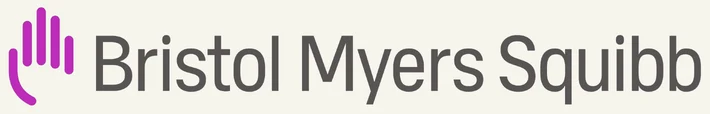
2023년부터 고객브리스톨마이어스스퀴브(BMS)는 세계 최대 제약사 가운데 하나다. 수십 년에 걸쳐 연구·임상·제조·영업 데이터를 아우르는, 업계에서 가장 깊이 있는 과학 기록 저장고 중 하나를 쌓아 왔다. BMS는 사람과 시스템, 조직에 쌓인 지식을 서로 연결해, 오늘날 바이오제약 업계의 특징인 서로 끊어진 시스템들 속에 오래 갇혀 있던 데이터와 전문 지식을 풀어내고 싶었다. 초기 신약 발견부터 제조 품질, 영업 활동까지 가치사슬 전체에서 말이다. 회사는 2023년 Claude를 쓰기 시작했는데, 긴 컨텍스트 윈도(한 번에 다룰 수 있는 글의 양)와 높은 수준의 추론 능력 때문에 앤스로픽의 모델을 골랐다.
2026년 5월 BMS는 Claude Enterprise를 전사 AI 플랫폼으로 선정했다. 에이전트 능력, 규제 환경에 맞는 보안 태세, 빠른 혁신 속도가 선정 이유였다. BMS는 먼저 전 세계 개발자와 데이터 과학자(현재 3,000명 이상)에게 Claude Code를 배포해, 이들이 오케스트레이션·에이전트 인프라를 직접 만들고 관리하는 부담에서 벗어나 새 제품 개발에 집중할 수 있게 했다. 그 과정에서 BMS는 자사의 설계 패턴과 기술 스택을 Skills와 MCP 연동을 통해 Claude Code에 정리해 넣었고, 덕분에 결과물의 일관성이 높아지고 신규 개발자의 적응도 빨라졌다. 회사는 이제 이 방식을 넓혀 과학자, 제조 팀, 영업 담당자도 더 빨리 업무에 적응하고 더 가치 있는 일에 집중하도록 돕는 방법을 찾고 있다. Claude Code가 자리를 잡자 BMS는 도입 범위를 넓혔고, 이제 3만 명이 넘는 전 직원에게 Claude Cowork를 보급할 계획이다.
BMS는 연구 단계부터 환자에게 약을 전달하기까지의 일에 Claude를 심고 있다. 회사 전체의 목표는
“대부분의 기업용 AI는 챗봇에서 멈춥니다. 진짜 큰 보상은 수십 년 동안 쌓인 데이터 칸막이 뒤에 아직 갇혀 있는, 손도 대지 못한 가치입니다… 앤스로픽의 Claude는 우리 시스템들을 연결하는 데 필요한 에이전트 능력과 혁신 속도, 보안을 갖추고 있습니다.”
그레그 마이어스, 브리스톨마이어스스퀴브 수석부사장(EVP) 겸 최고디지털기술책임자
수십 년 동안 칸막이 속에 흩어져 있던 데이터를, 어디에 있든 어느 부서가 갖고 있든 곧바로 꺼내 쓰고 행동에 옮길 수 있게 하는 것이다. 연구자들은 Claude로 사내 팀이 만든 대시보드에 기대지 않고 회사 데이터를 직접 조회하고, 다루고, 분석할 수 있다. Claude는 이제 BMS가 구독하는 외부 의료기록·보험청구 데이터베이스 30~40개를 넘나들며 작동해, 실제 진료 데이터(RWD) 질문에 대한 답을 만드는 시간을 최대 두 달에서 5분 이하로 줄였다. 과학자들은 실험 노트와 과거 연구를 연결해 신약 발견 기회를 찾고, 더 넓은 범위의 데이터를 바탕으로 더 빠르게 연구를 진행한다. BMS 팀들은 앤스로픽이 새로 발표한 Claude Science가 초기 단계 신약 발견 전반에서 회사의 속도를 어떻게 높일 수 있을지 이미 살펴보고 있다. 이런 탐색은 실험실 밖으로도 이어진다. 운영 팀은 엔지니어링 팀에 기대지 않고, 일상 언어로 인사(HR) 소프트웨어와 IT 서비스 관리 시스템에 질문하기 시작했다.
모델 세대가 바뀔 때마다 BMS가 Claude에 맡기는 일의 범위도 넓어진다. Claude Opus를 쓰면서 회사 전문가들은 Claude를 박사급 조언자이자 함께 생각하는 파트너로 대하고 있다. 지금 평가 중인 새로운 활용 사례도 여럿 있다. 앞으로 BMS는 사람이 중간에서 확인하는(휴먼 인 더 루프) 방식으로, 지금 쓸 수 있는 Claude의 가장 강력한 모델을 자율 업무 수행에 어떻게 적용할지 검토하고 있다. 예를 들어 직원이 여러 시스템에 걸친 HR·IT 요청 처리나, 실험 노트와 과거 연구를 연결해 신약 발견의 새 길을 찾는 일 같은 과제를 Claude에 넘기면, Claude가 회사의 MCP 연동 라이브러리를 활용해 어떤 사내 시스템을 쓸지, 일을 어떻게 짤지를 스스로 따져 보는 식이다.
“우리에게 중요한 성과는 병합된 코드가 아니라, 고객이 제품을 더 빨리 실제로 만나는 겁니다. Claude 덕분에 우리 팀들은 아이디어를 고객에게 실제로 쓸모 있는 무언가로 만들기까지 훨씬 짧은 시간이 걸립니다.”
앤디 팡, 도어대시 공동창업자
도어대시는 소비자와 동네 가게를 이어 주는 세계 최대급 지역 상거래 플랫폼이다. 2023년부터 앤스로픽 고객인 도어대시는 Claude를 폭넓게 쓰고 있다. 엔지니어링에서는 코딩이 가장 큰 용도이고, 지식 업무에서는 현재 매달 7,000명이 넘는 직원이 Claude Cowork로 일한다.
도어대시는 2025년 엔지니어링 팀에 처음 Claude Code를 배포했고, 사용은 회사 전체로 빠르게 퍼졌다. 예전 같으면 엔지니어 4명이 한 분기 넘게 걸렸을 코드 이전 작업을 엔지니어 1명이 3주 만에 끝냈다. 주요 제품의 출시 기간은 절반 넘게 줄었다. 이제 디자이너와 제품 매니저도 보안 승인을 받은 Claude 세션을 돌리는 사내 플랫폼에서 엔지니어와 함께 실제 서비스용 코드를 내보낸다.
Claude Code가 널리 쓰이는 흐름을 타고 Claude Cowork가 뒤따랐고, 2026년 전사 배포로 공식화됐다. 직원들이 Claude를 도어대시 사내 도구에 연결하면서 사용이 늘었다. 배포 후 첫 달에 주간 활성 사용자가 두 배 가까이 늘었고, 지금은 7,000명이 넘는 직원이 매달 Cowork를 쓰며 그중 절반 가까이는 매일 쓴다.
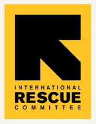
2025년부터 고객국제구조위원회(IRC)는 세계 최대 인도주의 단체 가운데 하나로, 2025년 분쟁과 재난을 겪은 2,050만 명 이상을 도왔다. 40개가 넘는 나라에서 활동하는 IRC는 직원의 근무 1시간, 기부금 1달러마다 효과를 최대로 끌어내야 한다. 2025년 IRC는 AI로 활동의 효과를 넓히기 위해, 할인된 라이선스를 제공하는 Claude for Nonprofits와 손잡았다.
사용 규모는 300명 시범 운영에서 약 2,400개의 Claude 좌석(이용 계정)으로 커졌고, 컴퓨터를 쓰는 직원 1만 명 전원으로 넓혀 가는 중이다. 파트너십은 생산성에 초점을 맞춰 시작했다. 시범 사용자의 절반이 한 달에 4시간 이상을 아꼈다고 답했고, 사업 팀들은 업무 과정 전체를 다시 짰다. 예전에 스프레드시트로 한 달 동안 손으로 해야 했던 사업 포트폴리오 종합 정리를 이제는 바로 받아 볼 수 있다.
Claude는 직원들에게 개별 사례에 대한 실시간 데이터도 제공해, 현장에서 새로운 일을 할 수 있게 했다. 이제 IRC 직원들은 계절성 감염 급증이나 산모 돌봄의 공백처럼 예전에는 쉽게 잡아내기 어려웠던 건강 문제가 생겨나는 것을 알아채고, 그에 맞춰 서비스를 조정할 수 있다. 아프리카의 현장 보건 팀은 Claude로 흩어져 있던 현장 데이터를 정리해, 전략 기획에 쓰이는 핵심 보건 지표의 비율을 20%에서 100%로 끌어올렸다. 새로 보이게 된 정보는 이미 현장의 돌봄을 바꾸고 있다. 감염 사례를 둘러싼 청소년 대상 찾아가는 활동부터, 산모들이 진료를 찾는 양상에 대한 실시간 조사까지다.
1. 2025년 12월~2026년 5월
“지금 가능해진 일들은 Claude 이전에는 상상도 못 했을 겁니다. 이 정도 수준의 실시간 데이터와 통찰을 얻을 길이 그냥 없었으니까요.”
캐서린 로드리게스, 국제구조위원회 정책·기획 담당 선임 디렉터
IRC의 영양실조 사업은 최첨단 AI 지능이 실제로 일하는 또 다른 사례다. 현장 팀이 종이 기록을 사진으로 찍으면, Claude가 그 데이터를 모아 아이 한 명 한 명의 치료 상태를 전에 없이 선명하게 보여 주게 된다. IRC는 팀들이 개인 단위와 사업 단위 모두에서 돌봄의 빈틈을 찾아 대응할 수 있을 것으로 기대한다. 로드리게스는 “일이 터진 뒤에 대응하던 방식에서 벗어나, 어떤 아이가 영양실조 치료를 중단할 위험이 있는지 미리 내다보고 더 일찍 개입하는 방식으로 바뀌고 있습니다”라고 말했다.
Claude는 사업 개발(재원 확보) 분야의 행정 부담도 줄였다. 한 나라 전체의 자금 지원 환경을 분석하는 데 걸리는 시간이 1주일에서 두어 시간으로 줄었다. 초기 시범 사용자 설문에서 응답자 전원이 Claude가 평소 업무 흐름에 자리 잡았고, 과제 하나당 2~3시간을 아껴 줬다고 답했다.
사무실 행정부터 현장까지, Claude는 IRC가 전 세계에서 도움이 가장 절실한 사람들에게 돌봄을 전하도록 돕고 있다.
제인스트리트는 퀀트 리서치의 질과 속도에 경쟁력이 달린 글로벌 트레이딩 회사다. 다양한 금융상품의 가격을 매기고 거래하는 모델·전략·시스템을 직접 만든다. 이 회사 개발자들은 여러 해 동안 대규모 데이터셋을 놓고 리서치 작업을 스스로 끝까지 해내는 AI 에이전트를 만들려고 애썼다. 초기 시도는 답답했고 결과도 들쭉날쭉했다.
모델이 더 똑똑해지고 믿을 만해지면서 상황이 바뀌었다. 제인스트리트가 Claude 3.7 Sonnet을 도입하자, 길고 여러 단계로 이뤄진 작업에서 에이전트의 성능이 한 단계 뛰어올랐다. 에이전트가 중간에 멈추거나 다시 손볼 필요 없이 작업을 처음부터 끝까지 해냈다. 새 세대 모델이 나올 때마다 회사 전체의 AI 도입이 빨라졌고, 각 팀은 리서치·엔지니어링·디자인 업무에 AI를 일상적으로 녹여 넣었다. 지금 Claude는 조직 거의 전체에 배치돼 있다.
그 대가는 더 많은 리서치 처리량이다. 이제 연구원들은 코드를 분석하고, 학습 실행을 지켜보고, 결과를 처리하는 에이전트 팀을 감독한다. 예전에는 계속 지켜봐야 했던 실험이 이제는 주말 동안 알아서 돌아간다. 한 연구원은 1년 전보다 분석을 약 50% 더 많이 해내고 있다고 추산한다. 그 결과 더 많은 연구를 더 빨리 검증하게 됐다.
Claude Fable 덕분에 에이전트는 더 길고 여러 단계로 된 작업을 맡을 수 있게 됐다. 한 연구원은 자신이 만든 대규모 Python 애플리케이션을 Claude Fable로 리팩터링해, 이리저리 뻗어 있던 코드를 깔끔한 구조로 정리했다. 그런 다음 약 1주 만에 코드베이스를 더 견고한 언어로 옮겼다. 이런 작업은 보통 한 팀이 수개월에 걸려 끝냈을 일이다.
“우리는 늘 실행할 여력보다 아이디어가 더 많았어요. Claude 같은 에이전트 덕분에 속도가 극적으로 빨라졌고, 한 사람 한 사람이 낼 수 있는 영향력이 몇 배로 커졌습니다.”
크레이그 폴스, 제인스트리트 캐피털 퀀트 리서치 총괄
연구 속도에 경쟁력이 달린 회사에서, Fable은 실험을 돌리고 새 금융 도구를 시험하는 데 드는 시간을 줄였다.
제인스트리트가 보기에 Fable을 다른 모델과 구별 짓는 것은 ‘연구 감각’이다. 합리적인 전략을 추구하고 신중한 결과물을 내놓는 판단력을 말한다. Fable 에이전트는 자기 작업을 스스로 점검하고, 더 복잡한 프로젝트를 맡으며, 장기 목표에서 벗어나지 않는다. 결과가 점점 믿을 만해지면서 제인스트리트는 에이전트를 리서치에 더 깊이 들이고 있다. 사용 범위는 리서치 팀을 훨씬 넘어섰다. 이제 디자이너들이 기능에 들어갈 실제 배포 수준의 코드를 직접 짜서 개발자에게 바로 넘겨 병합하게 하는 일이 잦다.
제인스트리트는 내부 평가에서 모델 능력이 빠르게 올라가는 것을 지켜봤다. 이 평가는 자사 엔지니어들이 이미 해 놓은 작업을 기준으로 에이전트의 작업을 품질·정확성·신뢰성 면에서 채점한다. 한때 이 시험의 1%만 통과하던 모델들이 결국 시험 자체를 넘어서자, 제인스트리트는 더 어려운 에이전트 코딩 평가를 새로 만들었다. 이 평가에서 Claude Fable 5.1은 Fable 5보다 점수를 32% 끌어올렸다. 제인스트리트의 퀀트 리서치 총괄 크레이그 폴스는 “내부 벤치마크에서 Claude Fable 5.1은 Fable 5나 Opus 5보다 우리 코딩 문제를 더 많이 풀고, 트레이딩 직관에서는 최고 수준을 보여 줍니다”라고 말했다. 그는 “이전 모델들은 오래 작업할수록 무슨 일을 하는지 따라가기 어려워졌지만, Fable 5.1은 길고 여러 단계로 된 작업에서도 읽기 쉬운 상태를 유지합니다”라고 덧붙였다.
Legora는 변호사를 위한 에이전트 운영체제를 만든 회사로, 수천 곳의 로펌과 기업 사내 법무팀이 이를 쓴다. Claude는 2024년 10월 Legora 플랫폼 출시 때부터 플랫폼의 일부를 구동해 왔다.
처음부터 AI를 바탕으로 세워진 법률 회사인 Legora는 플랫폼의 토대가 될 모델을 고르기 위해 엄격한 모델 평가를 진행했다. Claude는 가장 중요한 항목들, 즉 지시의 우선순위를 정하고 따르는 능력, 그리고 고객 요구가 바뀔 때 맞춰 적응하는 능력에서 좋은 성적을 냈다.
Claude의 능력이 커지면서 플랫폼의 능력도 함께 커졌고, 로펌들이 원래라면 손으로 했을 복잡하고 긴 호흡의 법률 업무를 맡게 됐다. Claude는 Legora 에이전트 시스템 안에서 추론 계층을 이룬다. 문서 작성·문서 검토·법률 리서치 전반에 걸쳐 계획을 세우고 일을 나눠 맡기며, 변호사가 보기 전에 모든 답변에 출처 근거를 단다. Legora 자체 평가에서 Opus 4.8은 출처에 근거한 결과물을 일관되게 내놓았고, 가장 크게 나아진 분야는 거래 문서 작성이었다.
“AI는 법률 업무가 이뤄지는 방식의 근본이 되어 가고 있고, 로펌과 사내 법무팀이 일하는 방식을 바꿔 놓을 겁니다. 우리가 써 보니 Claude는 지시를 따르는 능력과 에이전트 워크플로를 돌리는 능력이 탁월했습니다.”
야코브 라우리첸, Legora 최고기술책임자(CTO)
이런 성과는 고객 업무에서 드러난다. 14개국 로펌 31곳을 대상으로 한 독립 연구에서 변호사들은 매주 평균 4.3시간의 비청구 업무 시간을 되찾았다고 답했다. 변호사 100명당 연간 690만 달러의 추가 청구액에 해당하는 규모다. 한 인수합병(M&A) 거래에서는 Legora 팀이 4개 관할권에 걸친 900건 분량의 데이터룸을 반나절 만에 검토했다. 일반적인 팀이라면 1차 검토에만 1주를 쓸 일이다.
Legora는 회사 내부에서도 Claude를 바탕으로 일한다. 엔지니어링 팀은 Claude Code를 일찍 도입했고, 지금은 약 80명 규모의 엔지니어링 팀이 1,500곳이 넘는 조직이 쓰는 플랫폼을 떠받친다. 이제 Legora 코드의 절반을 훌쩍 넘는 양을 AI 도구가 만들어 내며, Claude Code는 엔지니어들이 쓰는 주력 도구 가운데 하나다. 개발자 경험 전담 팀은 백그라운드 코딩 에이전트를 돌리는데, 엔지니어 1명당 최대 10개 에이전트를 동시에 돌린다. Legora에서 Claude Code 사용은 전사 기준 약 50석에서 700석 이상으로 14배 늘었고, 지금은 모든 직원이 마케팅·디자인·운영·법률 엔지니어링 전반에서 Claude를 쓴다.
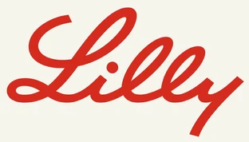
2024년부터 고객릴리는 과학을 치료로 바꿔 전 세계 사람들의 삶을 더 낫게 만드는 제약회사다. 릴리는 150년 동안 삶을 바꾸는 발견을 개척해 왔다. 지금 릴리의 의약품은 당뇨병과 비만, 알츠하이머병, 면역계 질환, 암 치료제로 전 세계 수천만 명을 돕는다. 릴리는 2024년 아마존 베드록(Amazon Bedrock)을 통해 Claude를 쓰기 시작했고, 앤스로픽의 모델을 사내 AI 플랫폼과 개발자들이 코드를 짤 때 쓰는 도구에 넣었다.
릴리는 2025년 7월 주로 연구 조직을 중심으로 약 1만 명에게 Claude Enterprise를 배포했다. 2026년 4월에는 전 직원이 Claude Enterprise를 쓸 수 있게 했는데, 대형 제약회사 가운데 처음이었다. 릴리에서 Claude를 가장 많이 쓰는 부서는 법무·컴플라이언스, 기술, 재무, 종양학, 연구 다섯 곳이다. 이 부서들에서는 정규직 직원의 85% 이상이 Claude를 적극적으로 쓴다.
연구 부문의 초기 사용자들은 지금도 Claude의 새로운 쓰임새를 찾아내고 있다. 일상적인 데이터 처리를 스프레드시트 매크로에 의존하던 생물학자들이 이제는 Claude로 두어 시간 만에 실제로 돌아가는 웹 앱을 만든다. 화학자들은 Claude로 복잡한 데이터를 실시간으로 시각화할 수 있다. 덕분에 기존 방식이라면 몇 시간이 걸렸을 새로운 구조 패턴(모티프)과 원자 배치를 찾아낸다.
“과학과 기술은 늘 함께 발전해 왔어요. 그래서 우리는 과학자들에게 먼저 Claude를 줬습니다. 이제 Claude는 회사 전체에 퍼져 있고, 예전으로 돌아가는 건 상상도 할 수 없어요. 환자들이 기다리고 있으니, 돌아갈 수도 없습니다.”
디오고 라우, 일라이 릴리 수석부사장 겸 최고정보·디지털책임자
전사 배포를 뒷받침하려고 릴리의 기술 조직은 자체 통제 장치를 만들었고, 이어 앤스로픽과 손잡고 Claude Enterprise의 바탕이 되는 기업용 준비 로드맵을 함께 짰다. 이 작업에는 릴리 내부 시스템을 공용 인터넷에 노출하지 않고도 Claude가 접근할 수 있도록 설계한 보안 전용 연결, 그리고 Claude를 거쳐 가는 데이터를 감사하는 데이터 유출 방지 훅(hook)이 들어 있다. 릴리는 이 훅을 두고 앤스로픽 엔지니어들과 함께 일하며 요구사항을 내고 앤스로픽의 테스트를 도왔다. 이 팀은 각 팀이 스킬과 플러그인을 올리는 사내 마켓플레이스도 만들었고, 올라온 제출물은 Claude가 1차 검토를 맡는다.
2026년 10월 릴리는 앤스로픽의 과학자용 작업 도구인 Claude Science를 폭넓은 사용자층을 대상으로 시범 운영하기 시작했다. 릴리는 같은 방식으로 요구사항을 내고 앤스로픽의 테스트를 도우며 이 도구의 기업용 통제 장치를 함께 다듬었다. 두 회사는 과학을 앞으로 나아가게 하려고 이런 도구들을 함께 만들고 있다.
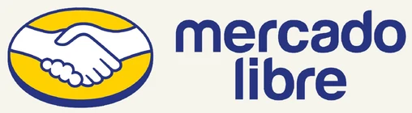
2023년부터 고객메르카도리브레는 18개국에서 사업하는 중남미 최대의 전자상거래·금융기술(핀테크) 회사다. 이 회사는 엔지니어링 조직 전체에 Claude Code를 배포해 개발자들의 생산성을 높였다. 목표는 마이크로서비스 4만 개에 걸친 버전 이전, 의존성 패치, 테스트 커버리지 같은 인프라 유지 보수를 Claude에 넘겨 팀이 더 빨리 제품을 내놓게 하는 것이었다.
메르카도리브레는 운영 부담을 더 많이 스스로 처리하고 엔지니어링 팀을 더 효과적으로 만들어 줄 곳을 찾으려고 여러 AI 업체를 평가했다. 이 회사는 코드베이스 이전, 자동 코드 리뷰, 테스트 생성처럼 가장 까다로운 작업과 개별 개발자의 생산성 향상에 Claude Code를 쓴다. 메르카도리브레는 2025년 1월 가장 이른 도입 기업 가운데 하나가 됐고, 지금은 조직 전체에서 2만 3,000명이 넘는 개발자가 Claude Code를 쓴다. Claude는 회사의 대규모 자율 변경 작업도 맡는다. 지난 1년 동안 사람의 감독을 받는 에이전트들이 50만 건이 넘는 코드 제출을 검토했고, 약 9,000개 서비스를 더 새로운 플랫폼으로 옮겼다.
생산성 향상은 이미 상당하다. 2026년 2분기 코드 제출은 전년 대비 110%, 병합된 코드는 100% 넘게, 배포는 75% 가까이 늘었다. 품질도 함께 좋아져, 롤백(배포 취소)은 전년보다 줄었다. 2025년 메르카도리브레가 실제 서비스에 내보낸 코드의 약 40%는 Claude가 쓰고 출시 전에 사람 엔지니어가 검토한 것이었다. 2026년 들어서는 사람이 직접 쓴 코드가 오히려 예외가 됐다. 이 변화는 회사의 개발 조직을 다시 짰고, 관리직의 30%가
“AI로 생산성이 오르면서 우리 최고참 엔지니어들이 코드를 검토만 하는 게 아니라 다시 직접 만들게 됐어요. Claude Cowork는 이제 직원 3만 1,000명이 쓰고 있는데, 세계적으로도 손꼽히는 대규모 기업 도입 사례입니다.”
메르카도리브레
다시 코드를 기여하고 있다. 메르카도리브레의 단기 목표는 풀 리퀘스트(코드 반영 요청) 검토 과정 전체를 포함해 코딩의 90%를 자율적으로 돌리는 것이다. 또 따로 나뉘어 있던 백엔드·프런트엔드·데이터베이스 직무를 하나의 ‘빌더’ 직무로 합치고, 빈틈은 에이전트가 메우게 할 계획이다.
메르카도리브레는 이어 엔지니어링이 아닌 팀으로 Claude를 넓혔다. 재무팀이 먼저였다. 한 달 안에 팀원 대부분이 Claude Cowork를 도입했고, 공유 스킬을 써서 회사 양식에 맞춘 발표 자료를 몇 분 만에 만들었다. 예전에는 여러 사람이 매주 몇 시간씩 들이던 일이다. Cowork는 월간 결산 기간도 3분의 1 줄였고 내부 보고도 개선했다. 이제 재무팀은 월말을 기다리지 않고 필요할 때 결산을 미리 볼 수 있어, 비용 상승 같은 변화를 더 일찍 알아채고 더 빨리 대응한다. Claude는 메르카도리브레의 사업 맥락을 바탕으로 하기 때문에, 실적이 왜 움직였는지 설명하는 첫 초안도 쓴다. 그러면 사업팀과 재무팀이 이를 검증한다. 거기서부터 마케팅, 인사, 법무, 컴플라이언스, 사업·영업 팀으로 퍼져 이들 팀의 2만 6,500명 넘는 인원에게 닿았고, 그중 78%가 지금 매주 쓰고 있다. 일부 구매팀은 IT 부서를 거치지 않고 공급업체 문의에 응대하는 Claude 기반 에이전트를 직접 만들기까지 했다. 메르카도리브레의 전략 혁신 디렉터 마리아 피아 가르시아는 “이제 스프레드시트는 거의 안 쓴다고 해도 될 정도예요. 모든 게 자동화됐고, Claude로 만든 대시보드가 곳곳에 있습니다. 지금은 핵심 업무 절차를 AI를 우선에 두고 처음부터 다시 설계하고 있어요. 사람들이 늘 꿈꿨지만 불가능하다고 여겼던 일들이죠”라고 말했다.
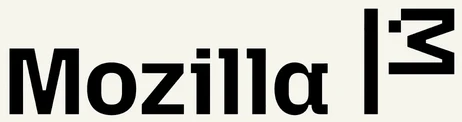
2025년부터 고객“우리는 세계 최고 보안 연구자들의 작업을 낱낱이 따져 본 경험이 오래 쌓여 있는데, Mythos Preview는 그들과 견줘 조금도 뒤지지 않습니다. 지금까지 사람은 찾는데 이 모델은 못 찾는 취약점은, 종류로 보나 복잡도로 보나 하나도 없었어요.”
바비 홀리, 파이어폭스 최고기술책임자(CTO)
모질라는 전 세계 수억 명이 쓰는 대표적인 오픈소스 브라우저 파이어폭스를 만들고 관리하는 곳이다. 20년 넘게 파이어폭스는 웹에서 가장 철저하게 검증받아 온 오픈소스 코드베이스 가운데 하나였다. 파이어폭스 엔지니어링 팀은 Claude Code를 일찍 도입했고, 지금은 파이어폭스 엔지니어링 전반에서 Claude Code를 널리 쓴다.
모질라는 파이어폭스 사용자를 지키려고 오래전부터 고급 보안 기법을 써 왔다. 그래서 앤스로픽의 프런티어 레드팀(Frontier Red Team)이 사이버 방어 분야에서 Claude를 시험해 보자며 모질라를 찾았다. 2주간의 평가에서 Claude Opus 4.6은 파이어폭스의 가장 핵심적인 코드에서 그동안 알려지지 않았던 취약점 22개를 찾아냈고, 그중 14개는 심각도가 높은 것이었다. 모질라 엔지니어들은 몇 시간 안에 수정 사항을 반영하기 시작해 Firefox 148에 담아 내놓았다. 두 달 뒤 모질라는 Claude Mythos Preview가 찾아낸 취약점 271개에 대한 수정도 추가로 내놓았다.
모질라에게는 오랫동안 공격자에게 유리했던 비대칭이 뒤집히기 시작했다. 예전에는 드러나기까지 몇 년씩 걸리던 결함을, 이제는 그 코드를 책임지는 숙련된 방어 담당자들이 하나하나 찾아내 고칠 수 있게 됐다.
모질라는 “우리는 이 도구들을 대규모 AI 보조 분석이 보안 엔지니어의 도구 상자에 새로 더해진 강력한 무기라는 분명한 증거로 본다. 파이어폭스는 수십 년 동안 가장 광범위한 테스트와 정적 분석, 정기 보안 검토를 거쳐 왔다. 그런데도 이 모델은 그동안 알려지지 않았던 버그를 많이 찾아냈다”고 밝혔다.
페이팔은 수억 명의 소비자와 가맹점이 믿고 쓰는, 세계 최대급 디지털 결제망 가운데 하나를 운영한다. 전 세계에서 규제를 받는 금융기관인 만큼, 더 엄격하고 복잡한 규정 준수 요건을 충족하는 기술을 만들어 내놓는다.
이제 Claude와 여러 도구가 페이팔 직원 상당수의 일하는 방식과, 페이팔이 고객에게 제공하는 지능을 뒷받침한다. 현재 1만 2,000명이 넘는 페이팔 직원이 제품·기술·영업 전반에서 Claude를 쓴다. Claude Code는 기술팀에서 가장 많이 쓰이는 AI 도구 가운데 하나다.
페이팔 제품 조직의 팀들은 이제 제품 분석과 대시보드 제작을 Claude로 직접 해결한다. 제품팀은 데이터 조회·검색용 맞춤형 MCP 서버를 만들어 엔지니어링 인력과 데이터 분석가에 대한 의존을 줄였다.
가맹점 심사, 규정 준수 검토, 거래 진행 과정도 Claude로 개선돼 검토 효율이 높아졌고, 예전에는 서로 단절된 여러 도구에 흩어져 있던 데이터가 한곳에 모였다. 몇 시간 걸리던 검토가 이제는 그 몇 분의 일이면 끝난다. 2025년 8월부터 페이팔 영업팀은 파이프라인 관리와 거래처 위험 검토 전용으로 맞춤 제작한 플러그인을 써 왔고, 이를 통해 사용자 1인당 주당 평균 45분을 아끼고 있다.
“2025년에 우리는 직원들이 최고의 AI 도구들을 쓸 수 있게 해 주고, 결과가 스스로 말하게 했습니다. Claude가 페이팔에서 믿을 만한 협업자가 됐다고 느끼는 건, 이제 직원들이 Claude를 매일 함께 생각하고 실행하는 파트너로 찾기 때문입니다.”
안슈 바르드와지, 페이팔 최고 AI 전환·단순화 책임자
거래처 관리팀은 Claude 기반의 AI 분석 플랫폼 AMOS(Account Management Operating System, 거래처 관리 운영 시스템)를 써서 포트폴리오 인사이트, 가맹점 건전성 진단, 파이프라인 정보를 며칠이 아니라 몇 분 만에 얻는다. 이 AI 분석 플랫폼은 손으로 대시보드를 만들던 작업을, 실시간 데이터에 대화로 접근하는 방식으로 바꿨다. AMOS 덕분에 보고서 준비 시간은 5~10분으로 줄었고, 매주 가맹점 성장 신호를 짚어 주는데 그중 일부는 예전에는 포착되지 않던 것이다. 그만큼 거래처 관리자는 가맹점과 더 많은 시간을 보낼 수 있게 됐다.
이와 함께 페이팔은 앤스로픽의 ‘AI Fluency for Small Business’(소상공인을 위한 AI 활용 역량) 과정의 파트너다. 이 과정은 고객 응대, 백오피스 관리, 공급망 운영, 리더십 등 어느 자리에 있든 소상공인 사업장 직원이 실무형 협업 역량을 기르도록 돕는다.
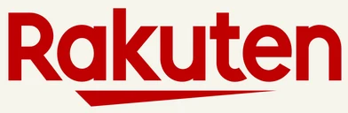
2024년부터 고객라쿠텐 그룹은 30개 국가·지역에서 70개가 넘는 사업을 운영하며 전 세계 20억 명 이상의 회원에게 서비스하는 글로벌 인터넷·전자상거래 기업이다. 2023년 라쿠텐은 사업의 모든 부분에 AI를 심는 전사 차원의 노력을 시작했고, 이를 ‘AI-nization(AI화)’이라고 부른다. 개발자에게 이것은 회사의 높은 품질·보안 기준을 지키면서도 더 야심 찬 제품을 만들 수 있는 AI를 뜻한다.
Claude Code를 쓰면서 라쿠텐 팀들은 사람의 지시를 최소한으로만 받으며 7시간 동안 자율적으로 코딩할 수 있었고, 여러 언어가 섞인 복잡한 코드베이스에서 99.9%의 정확도를 냈다. 신규 기능의 출시 기간은 75% 넘게 줄었고, 라쿠텐 팀들은 이제 주요 업데이트를 분기마다가 아니라 2주마다 내놓는다. Claude Code가 회사 전체로 퍼지면서 라쿠텐의 팀 구성도 바뀌었다. 엔지니어링·디자인·안정성 관리로 나뉘어 있던 역할이 하나로 합쳐졌고, 이제는 여러 일을 두루 하는 제너럴리스트가 아이디어부터 배포까지 제품 개발 전 과정을 맡는다.
“Claude Code 같은 에이전트는 새로운 혁신의 비용을 최소화하는 데, 그러니까 아이디어에서 실제 서비스까지 빠르게 넘어가는 데 함께 쓸 때 빛을 발합니다. 유능한 사람에게 맥락과 안목을 갖춘 에이전트를 쥐여 주면, 숨어 있던 인재가 자기 잠재력을 100배로 키울 수 있습니다.”
유스케 가지, 라쿠텐 AI for Business 총괄 매니저
이어서 라쿠텐은 조직 전체에 Claude Managed Agents를 배치했다. 제품·영업·마케팅·재무 분야의 전문 에이전트를 각각 일주일 안에 배치했다. 직원들은 Slack이나 Microsoft Teams에서 Claude에게 일을 맡기고, 제안서 슬라이드와 스프레드시트부터 실제로 돌아가는 애플리케이션까지 완성된 결과물을 받는다. 관리자들은 Claude와 함께 검토 업무를 처리하고 업무 흐름의 병목을 가려 정리한다. Claude의 능력이 커지면서 라쿠텐의 에이전트는 더 많은 자율권을 맡게 됐고, 이제는 섬세하고 오래 걸리는 작업을 밤사이에 끝낸다. 라쿠텐은 모든 작업을 과제 완수 여부와 과제당 비용으로 측정하고, 각 작업을 그 비용을 정당화할 만한 능력을 가진 모델에 배정한다. 일상적인 일은 작은 Claude 모델이 처리하고, 가장 까다로운 작업은 프런티어 모델이 최대 추론 강도로 수행한다. 가지는 “최고 강도에서 Fable은 자기 작업을 되돌아보고 검증합니다. 우리에게는 바로 그 점이 고도로 자율적인 운영을 가능하게 합니다. 더 생각하는 데 드는 비용은 충분히 제값을 합니다”라고 말했다.
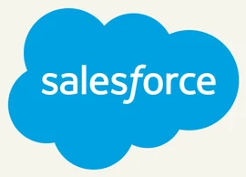
2023년부터 고객세일즈포스는 AI를 일찍 받아들였다. Claude Code로 소프트웨어 개발 방식을 다시 짰고, Claude를 엔지니어링 밖의 팀까지 넓혔으며, 기업이 신뢰할 수 있는 AI 에이전트를 만들고 배치하고 관리하도록 돕는 Agentforce를 출시했다. 현재 세일즈포스 직원 8만 3,000명 가운데 60% 넘게 Claude를 쓰고 있으며, 회사는 Claude Code와 Claude Enterprise를 우선 채택한 AI 비서이자 생산성 도구로 정해 모든 개발자와 지식 노동자에게 제공하고 있다.
세일즈포스는 회사의 방대한 코드베이스를 놓고도 안정적으로 추론하는 능력을 보고 Claude Code를 엔지니어링 전반의 주력 AI 에이전트로 삼았다. 지난 1년 동안 개발자 1인당 병합된 풀 리퀘스트(코드 변경 요청)는 79% 늘었고, 그 결과 개발자 1인당 실질 산출량은 151% 높아졌다. 한 제품팀은 Claude 기반 규칙 프레임워크로 API 엔드포인트 33개를 13일 만에 이전했는데, 원래 231인일(人日)이 걸릴 것으로 예상한 작업이었다. 생산성과 함께 품질도 올라갔다. 풀 리퀘스트 양이 늘었는데도 장애는 5% 줄었다. Claude는 세일즈포스 자체 개발 환경인 Agentforce Vibes의 기본 코딩 모델이기도 하다.
엔지니어링 밖에서는 Claude가 Slack에 내장된 AI 비서 Slackbot을 움직인다. 세일즈포스 직원 거의 모두가 Slackbot을 쓰며, Slackbot은 연환산 810만 시간 규모의
세일즈포스는 전환 기준으로 앤스로픽 발행 주식의 1% 미만을 실질적으로 보유하고 있다.
“Claude의 뛰어난 추론 능력을, 모든 기업이 기반으로 삼는 신뢰할 수 있는 데이터·업무 흐름·거버넌스와 결합해, 우리는 생각하고 추론하고 행동하는 역동적인 인터페이스를 내놓고 있습니다. 앞으로 모든 비즈니스는 이렇게 돌아갈 겁니다.”
마크 베니오프, 세일즈포스 회장 겸 CEO
생산성 향상을 이끌고 있다. 이는 전 분기보다 2배 넘게 늘어난 수치다. Slack은 Claude Tag의 출시 파트너이기도 했다. Claude Tag를 쓰면 팀은 어느 채널에서든 @Claude에게 일을 맡길 수 있다. 또 Claude Enterprise의 Slack MCP로 직원들은 Slack의 맥락을 Claude로 가져와 바로 처리할 수 있다.
2025년 10월 세일즈포스는 Claude를 Agentforce 360의 우선 모델로 지정했고, 자사 신뢰 경계(trust boundary) 안에 완전히 들어온 첫 모델로 삼았다. Claude 트래픽은 세일즈포스가 관리하는 가상 사설 클라우드 안에 머물며 기존 보안 통제를 그대로 받는다. 이 덕분에 금융·의료·생명과학처럼 규제를 받는 업종의 고객도 Claude 위에서 에이전트를 돌릴 수 있다. 2026년 8월 두 회사는 Claudeforce로 협력을 한층 깊혔다. Claudeforce는 세일즈포스의 데이터·업무 흐름·비즈니스 로직·거버넌스를 Claude 안으로 바로 들여온다. 이로써 Claude는 Headless 360 위에 구축되는 외부(서드파티) AI 경험의 우선 모델이 됐다. Headless 360은 세일즈포스 플랫폼의 모든 기능을 열어, 사람과 에이전트가 어떤 화면에서든 경험을 만들고 실행하고 제공할 수 있게 한다. 출시와 함께 ‘Salesforce in Claude’도 나왔다. 미리 만들어 둔 영업 스킬 37개를 담은 플러그인으로, 영업 담당자와 에이전트가 매출 주기 전체를 놓고 추론하고, 파이프라인 갱신을 자동화하고, Claude 안에서 통제된 방식으로 실행에 옮길 수 있게 해 준다.
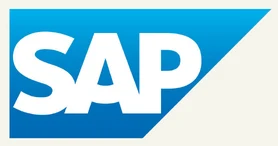
2023년부터 고객SAP는 재무·구매·인사·공급망·고객 경험을 아우르는 기업용 애플리케이션과 비즈니스 AI 분야의 세계적 선도 기업이다. 에이전트 AI 시대를 향한 SAP의 비전은 ‘자율 기업(Autonomous Enterprise)’이다. 사람은 방향과 정책을 정하고, AI는 조직 전체에서 조율되고 통제된 방식으로 일을 실행하는 새로운 운영 모델이다. 자율 기업을 만들려면 수십 년간 쌓인 깊은 비즈니스 맥락을 놓고 추론하면서도, SAP 고객이 의지하는 거버넌스와 통제 안에서 움직이는 지능이 필요하다.
SAP는 Claude 같은 모델을 자사 Business AI Platform과 AI 상호작용 계층인 Joule에 심어 이 비전을 실현해 가고 있다. Business AI Platform은 Claude를 포함한 최고 수준의 모델들을 써서 고객이 중요한 경영 판단을 내리고 에이전트를 도입하도록 돕는다. Joule은 모든 질의에 깊은 비즈니스 맥락을 덧붙인 뒤, Claude처럼 가장 알맞은 모델로 보내 작업을 계획하고 실행하게 한다. 이 과정에서 Model Context Protocol(MCP)과 Agent2Agent(A2A)를 통해 내부 시스템 및 외부 시스템과 연결된다.
Joule for Consultants는 신뢰할 수 있는 SAP 지식에 즉시 접근하게 해 SAP 클라우드 전환을 앞당기는 에이전트형 AI 전문가로, 컨설턴트의 시간을 하루 최대 1.5시간 아껴 준다. 이렇게 아낀 시간은 큰 경제적 이익으로 이어질 수 있다. 컨설턴트가 고객에게 조언하고, 프로젝트 계획을 짜고, 더 전략적인 문제를 푸는 데 시간을 더 쓸 수 있기 때문이다.
SAP는 전환 기준으로 앤스로픽 발행 주식의 1% 미만을 실질적으로 보유하고 있다.
“자율 기업에는 비즈니스 맥락을 이해하고, 조직이 의지하는 통제 범위 안에서 움직이는 AI가 필요합니다. Claude와의 협력은 여기서 중요한 역할을 합니다.”
크리스티안 클라인, SAP SE CEO
“SAP Joule for Consultants는 2,500만 건이 넘는 문서와 12테라바이트 분량의 SAP 전문 데이터를 아우르는 SAP의 공식 지식 기반 위에 만들어져, 출처가 달린 명확한 답을 몇 초 만에 내놓습니다. Claude 같은 모델을 활용해 이 능력을 SAP의 전 세계 컨설팅 생태계로 넓힐 수 있었고, 모든 직급의 컨설턴트를 지원하며 팀이 고객에게 더 높은 품질의 SAP 프로젝트를 최대 14% 더 빨리 전달하도록 돕고 있습니다.” SAP Business AI의 SAP Joule for Consultants 수석 아키텍트 사친 카우라의 말이다.
50개가 넘는 분야별 Joule Assistants와 200개가 넘는 전문 에이전트를 포함한 SAP의 AI 기반 솔루션 제품군은 추론 기능과 내장형 에이전트 기능의 일부로 Claude를 활용한다. 이 에이전트들은 분기 말 결산을 마감하고, 직원의 복잡한 휴가 문의에 답하고, 배송 중인 공급업체 주문의 경로를 바꾼다.
쇼피파이는 처음 창업한 사람부터 대기업 브랜드까지 전 세계 수백만 사업체의 상거래를 뒷받침한다. 이 플랫폼을 쓰면 온라인 상점이든 오프라인 매장이든 그 사이의 어떤 형태든, 누구나 손쉽게 사업을 시작하고 운영하고 키울 수 있다.
쇼피파이는 규모와 상관없이 모든 판매자가 더 많은 일을 더 빨리 해내도록 AI 상거래 비서 Sidekick을 만들었다. 쇼피파이가 Sidekick을 구동하는 데 쓰는 모델 가운데 하나가 Claude다. 안정적이고, 판매자의 복잡한 문제를 순식간에 추론해 내는 능력 덕분이다. Sidekick은 이 지능을 수백만 판매자에게 전달해, 사업을 분석하고 프로모션을 계획하고, 예전에는 분석가가 있어야 얻던 답을 바로 실행에 옮기도록 돕는다. 덕분에 신규 판매자는 첫 판매까지 걸리는 기간이 몇 주에서 며칠로 줄었다. 판매자들도 적극적으로 쓰고 있다. Sidekick을 쓰는 일간 활성 판매자 수는 1년 새 3배 넘게 늘었고, 해당 분기에 만들어진 Shopify Flow 자동화의 거의 절반이 Sidekick으로 만들어졌다. Sidekick의 능력은 Sonnet 3.5부터 앤스로픽의 최신 Sonnet 버전까지, Claude의 버전이 바뀔 때마다 함께 커졌다.
Claude는 쇼피파이 팀이 무언가를 만드는 방식도 바꿨다. Claude Code는 전사적으로 7,500명이 넘는 직원에게 제공된다. Claude를 찾는 일은 회사 전체에서 반사적인 습관이 됐다. 엔지니어든 아니든 모두가
“이제 에이전트는 사람과 나란히 실제 문제를 풀며, 아이디어만 있으면 누구든 무언가를 만드는 사람으로 바꿔 놓습니다. 앤스로픽은 쇼피파이가 일하는 방식, 그리고 우리가 서비스하는 수백만 판매자를 위해 무언가를 만드는 방식에서 중요한 부분입니다.”
토비 뤼트케, 쇼피파이 최고경영자(CEO)
예전에는 며칠 걸리던 정교한 사내 도구를 몇 분 만에 만든다. 쇼피파이 응용 머신러닝(Applied ML) 부사장 앤드루 맥나마라는 “이 모델들을 쓰는 것만으로 모두가 훨씬 효율적이 됐습니다. 코딩뿐 아니라 콘텐츠 제작, 이메일 작성, 그 밖의 셀 수 없이 많은 용도에서요”라고 말했다.
쇼피파이는 Claude Fable 5를 포함한 앤스로픽 프런티어 모델의 얼리 액세스(사전 이용) 파트너이기도 하다. 쇼피파이는 이 모델들을 사내 테스트 환경에서 평가하고, 출시 전에 모델이 어떤 방향으로 발전할지 다듬는 데 힘을 보탠다.
“우리는 사업 전반에 AI를 전략적으로 배치해서 리스크 전문성을 더 깊게 하고, 고객과 판매 파트너, 직원들의 경험을 끌어올리고, 생산성과 효율을 높이고 있습니다. 앤스로픽과의 협업은 그 노력의 중요한 한 부분이고, AI 활용이 발전해 갈수록 이 파트너십의 효과도 시간이 지나면서 복리처럼 불어날 거라고 봅니다.”
모즈간 르페브르, 트래블러스 수석부사장(EVP)·최고기술운영책임자
지난 10년 동안 트래블러스는 혁신 역량이라는 경쟁 우위를 쌓아 왔다. 이제 회사는 어렵게 얻은 그 노하우를 모두 동원해 사업 전반에 AI를 폭넓고 전략적으로 배치하고 있다. 르페브르는 “처음부터 우리는 선도적인 AI 조직과 손잡고 싶었다”고 말했다. 2026년 1월 트래블러스는 엔지니어, 데이터 과학자, 애널리스트, 프로덕트 오너 약 1만 명에게 Claude 어시스턴트를 제공했다. 이후 이용 범위는 약 2만 5,000명의 직원으로 넓어졌고, 의미 있는 효과를 내고 있다.
트래블러스는 여러 일 가운데서도 소프트웨어 개발의 전 과정, 즉 탐색·설계·구축·테스트·배포 전반에 AI를 통합하고 있다. Claude는 회사 전체에서 더 빠른 시제품 제작과 더 똑똑한 분석을 돕는다. Claude Code는 코드 생성·분석, 문서화, 테스트를 포함한 현대적인 엔지니어링 방식을 한 단계 끌어올린다. 트래블러스 팀들은 더 많은 코드를 쓰고, 더 자주 커밋하고, 트래블러스 환경에 코드를 더 빨리 병합하고 있다.
최고AI책임자 맷 고먼은 이렇게 말한다. “앤스로픽과의 파트너십은 우리가 AI를 대규모로 실행하는 데 중요합니다. 앤스로픽의 앞선 어시스턴트와 모델을 트래블러스 고유의 데이터·전문성과 결합해 회사 전반의 과제를 추진하고 있습니다.”
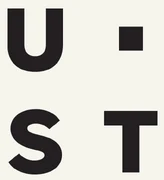
2023년부터 고객UST는 전 세계 은행, 통신사, 의료기관, 제조업체를 위해 기술을 만들고 운영하는 글로벌 디지털 전환 기업이다. 소프트웨어와 물리 세계가 만나는 지점에서 고객의 가장 어려운 문제, 즉 실리콘(반도체) 검증, 네트워크 운영, 청구 처리를 다룬다. 이런 일에서 신뢰성과 안전은 그동안 사람이 직접 짜는 테스트 스크립트와 전문가 검토에 기대 왔다. UST는 이처럼 실수의 대가가 큰 엔지니어링 환경 안에 Claude를 투입하고 있다.
UST는 먼저 자사 엔지니어링 조직 안에서 Claude를 검증했다. UST의 하드웨어 검증 플랫폼에서 Opus 4.8로 돌아가는 Claude Code는 칩 회로도를 직접 읽은 뒤, 뒤 단계에 미치는 영향을 확인하는 회귀 테스트를 만들어 실행한다. Claude는 실제 장비 데이터를 디지털 트윈(하드웨어의 가상 복제본)과 비교해, 신호 무결성 문제를 생산 단계에 이르기 전에 잡아낸다. UST는 칩 검증 주기를 50–70% 줄였고, 파이프라인을 더 빠르게 만드는 것이 목표다.
“Claude를 UST의 엔지니어링·산업 전문성과 결합하면, 고객이 AI가 이끄는 의사결정을 안전하고 확실하게 실제 업무에 적용하도록 돕는 산업별 플랫폼을 시장에 내놓을 수 있습니다.”
크리슈나 수딘드라, UST 최고경영자(CEO)
UST는 이제 고객을 위해 만들고 운영하는 시스템에 Claude를 넣고 있다. 의료 분야에서는 UST CarePath가 Claude로 흩어진 청구·진료 데이터를 명확한 다음 조치로 바꾸고, 가입자에게 나가는 권고는 모두 사람이 먼저 승인한다. 통신 분야에서는 UST IntelliOps가 Claude로 이동통신망 장애를 예측하고 운영팀이 받는 불필요한 경보를 줄인다. 은행 분야에서는 UST FinX가 Claude 기반 에이전트를 은행 업무에 직접 넣는다. 지능형 사건 처리, 고객 관리 업무 자동화, 의사결정 지원이다. 어느 산업에서든 UST는 Claude에 사람의 승인 단계와 감사 통제를 함께 붙인다.
UST는 전 세계 엔지니어, 아키텍트, 컨설턴트, 산업 전문가 2만 명에게 Claude 교육을 하고 있고, 고객사에 Claude를 배치할 전문 팀도 꾸리고 있다. 이번 파트너십으로 UST는 Claude를 물리적 AI, 즉 사람들이 쓰는 물건을 만드는 장비와 엔지니어링 공정 속에 들어간 지능으로 넓히고 있다.
“Claude Code를 쓰기 시작하고 몇 주 만에, 기술 조직 곳곳의 사람들이 소프트웨어 개발자처럼 일하게 됐습니다. 이제 우리에겐 ‘상상할 수 있다면, Claude가 코드로 만들어 준다’는 구호가 있어요. 불과 몇 달 만에 이룬 역량 강화, 단순화, 효율 향상은 놀라울 정도입니다.”
야고 테노리오, 버라이즌 수석부사장(SVP)·최고기술책임자(CTO)
버라이즌은 세계 최대급 통신 기업 중 하나로, 미국 최대 무선 네트워크를 운영한다. AI 우선 기업으로 전환하는 과정에서 버라이즌은 보안, 신뢰성, 확장성을 기준으로 코딩 도구를 평가했고, 기술·제품 조직용으로 Claude Code를 골랐다. 현재 33,000명이 넘는 엔지니어가 Claude Code로 개발하고 있다.
버라이즌은 네트워크 보안을 강화하려고 Project Glasswing에 합류한 첫 통신사 중 하나가 됐다. 버라이즌은 2026년 5월 앤스로픽과 손잡고, 네트워크 사이버보안을 높이기 위해 첨단 인공지능 모델 Claude Mythos를 시험했다.
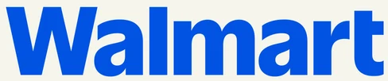
2024년부터 고객“우리는 AI로 쇼핑은 더 직관적으로, 엔지니어링은 더 생산적으로 만들고 있습니다. Claude 같은 에이전트가 고객의 의도를 더 잘 이해하는 일부터 반복되는 개발 작업을 빠르게 하는 일까지, 두 가지 모두를 돕고 있어요.”
대니얼 댕커, 월마트 AI 가속·제품·디자인 담당 수석부사장(EVP)
월마트는 세계 최대 소매업체로, 전 세계 10,900곳이 넘는 점포와 선도적인 전자상거래 플랫폼을 갖고 있다. 수십 년 동안 월마트는 ‘사람들이 돈을 아끼고 더 잘 살도록 돕는다’는 목적을 이루려고 판을 바꾸는 기술들을 받아들여 왔다. 회사는 AI에 대해 “사람이 이끌고 기술이 힘을 보태는” 접근을 취한다. 고객과 직원을 깊이 이해한 뒤, 가장 중요한 일을 돕기에 가장 알맞은 해법을 만드는 방식이다.
Claude Sonnet 4.6 같은 앤스로픽의 모델은 월마트가 더 똑똑하고 개인화된 경험을 만들도록 돕고 있다. 고객이 자기 말로 필요한 것과 원하는 것을 말하면, 그 경험이 상품을 찾고 사는 방식을 바꾼다. 앤스로픽은 월마트의 AI 쇼핑 에이전트 Sparky에서 월마트와 협력했다. Sparky는 고객이 온라인에서 사든 매장에서 사든 상품을 찾고, 비교하고, 일상의 필요를 해결하도록 돕는다.
월마트 엔지니어들도 Claude와 함께 일한다. Claude는 회사의 개발자 생산성 에이전트 WIBEY를 움직이는 모델 중 하나다. 엔지니어링 팀은 WIBEY로 기술을 만들고, 배포하고, 운영한다. 예측 가능하고 반복되는 작업은 에이전트에게 넘기되, 사람의 감독과 관리 체계는 그대로 유지한다.
Shy Bird는 외식업자 앤드루 홀든과 일라이 펠드먼이 세운, 하루 종일 문을 여는 로티세리(통구이) 겸 카페다. 보스턴 일대에 매장 세 곳으로 커졌고, 로티세리 치킨과 직접 만든 소스로 알려져 있다. 펜웨이 파크 근처의 가장 인기 있는 매장 중 한 곳에서는 브런치 손님들이 긴 대기와 지연을 자주 겪었다. 코드를 한 줄도 써 본 적 없던 펠드먼은 주방 사진을 찍고, 매출과 주문표(티켓) 데이터를 뽑고, 요리사들이 관찰한 내용을 모은 뒤, 이 모든 것을 Claude와 공유했다.
Claude가 찾아낸 병목은 바로 눈앞에 숨어 있었다. 거의 모든 주문에 들어가는 아보카도 퓌레는 손이 닿지 않는 곳에 있었고, 아침에 몇 번 주문될 뿐인 오버나이트 오트 팬이 조리 라인의 가장 좋은 자리를 차지하고 있었다. 펠드먼은 요리사들과 함께 조리 라인 재설계를 하나하나 짚었고, 이들은 조리대를 함께 다시 짰다. 이제 피크 시간대 서비스는 60% 빨라졌다. 자기 식당을 고쳐 본 경험으로 홀든과 펠드먼은 같은 도구가 다른 식당에도 도움이 될 수 있다고 확신했다. Shy Bird의 사내 도구로 시작한 것은 이제 전국 60개 식당이 쓰는 인텔리전스 플랫폼 Colette로 자랐다.
“시간이나 돈이 없으면 데이터와 정보는 쓸모가 없어요. 쓸모 있는 건 통찰과 행동이고, Claude가 우리에게 바로 그걸 줄 수 있다는 걸 깨달았죠.”
일라이 펠드먼, Shy Bird 파트너
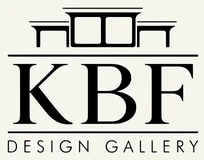
KBF Design Gallery는 플로리다주 올랜도의 가족 경영 인테리어 디자인·리모델링 회사로, 맞춤형 주방·욕실·집 전체 리노베이션을 전문으로 한다. 애덤 벨러켓과 그의 누이 애슐리가 부모에게서 사업을 물려받았을 때, 이들은 업계에 흔한 문제에 부딪혔다. 재능 있는 디자이너들이 행정 업무에 파묻혀 있었던 것이다. KBF는 Claude Code와 Claude Cowork로 일정 관리, 디자인에서 시공으로 넘기는 인계 내용 검증, 계약 범위서 작성을 위한 맞춤 도구를 만들었고, 수석 디자이너에게 1년 근무 시간의 거의 4분의 1을 되돌려 줬다. 그녀는 이제 그 시간을 고객 경험을 차별화하는 디자인 작업에 쓴다. 2025년 Claude를 도입한 뒤, 디자이너 3명뿐인 팀이 KBF가 Claude로 만든 도구를 활용해 회사를 한 해 70건의 프로젝트를 디자인하는 규모로 키웠고, 매출도 32% 늘었다.
“Claude와 함께 배우는 게 제가 가장 의지하는 일이 됐어요. 예전 같으면 한 방에 마주 앉을 엄두도 못 냈을 수준의 지성을 곁에 두게 된 것 같아요.”
애덤 벨러켓, KBF Design Gallery 공동 소유주
S-1에 실린 순서대로 놓았습니다. 그림을 누르면 큰 그림이 열립니다.
| [logo mark "A\" — no words] | [앤스로픽 로고 마크 "A\" — 글자 문구 없음] |
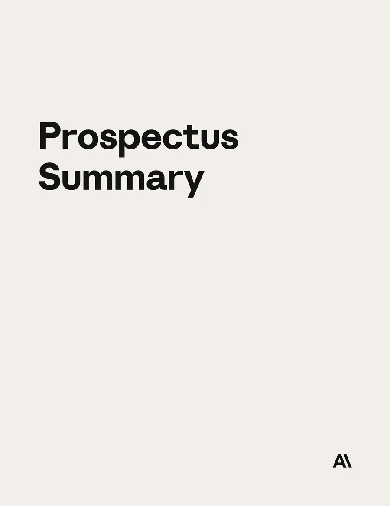
| Prospectus Summary | 투자설명서 요약 |
| [logo mark "A\"] | [앤스로픽 로고 마크] |
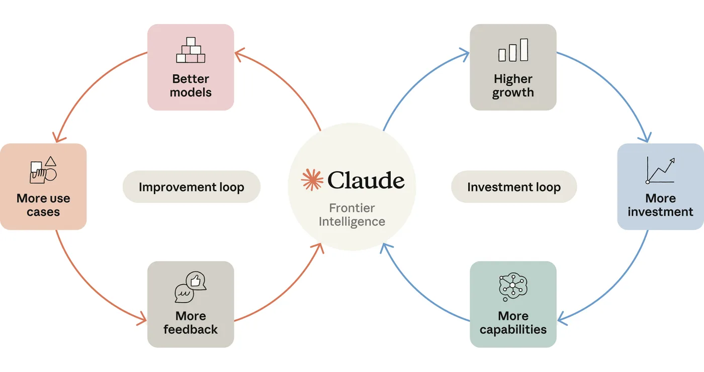
| Claude | Claude |
| Frontier Intelligence | 최첨단 지능 |
| Improvement loop | 개선 루프 |
| Better models | 더 나은 모델 |
| More use cases | 더 많은 사용처 |
| More feedback | 더 많은 피드백 |
| Investment loop | 투자 루프 |
| Higher growth | 더 높은 성장 |
| More investment | 더 많은 투자 |
| More capabilities | 더 많은 역량 |
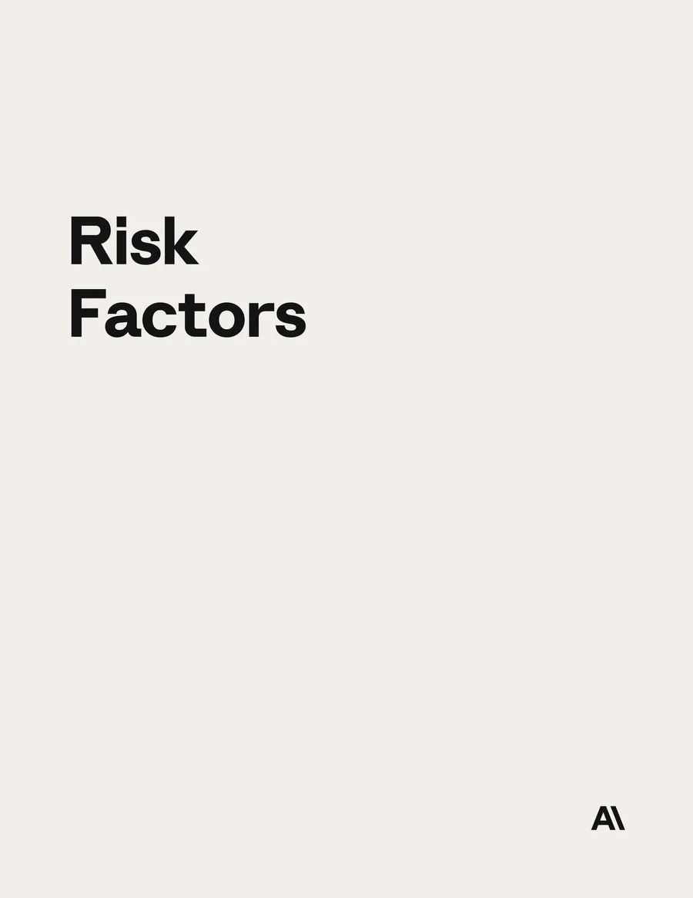
| Risk Factors | 위험 요인 |
| [logo mark "A\"] | [앤스로픽 로고 마크] |
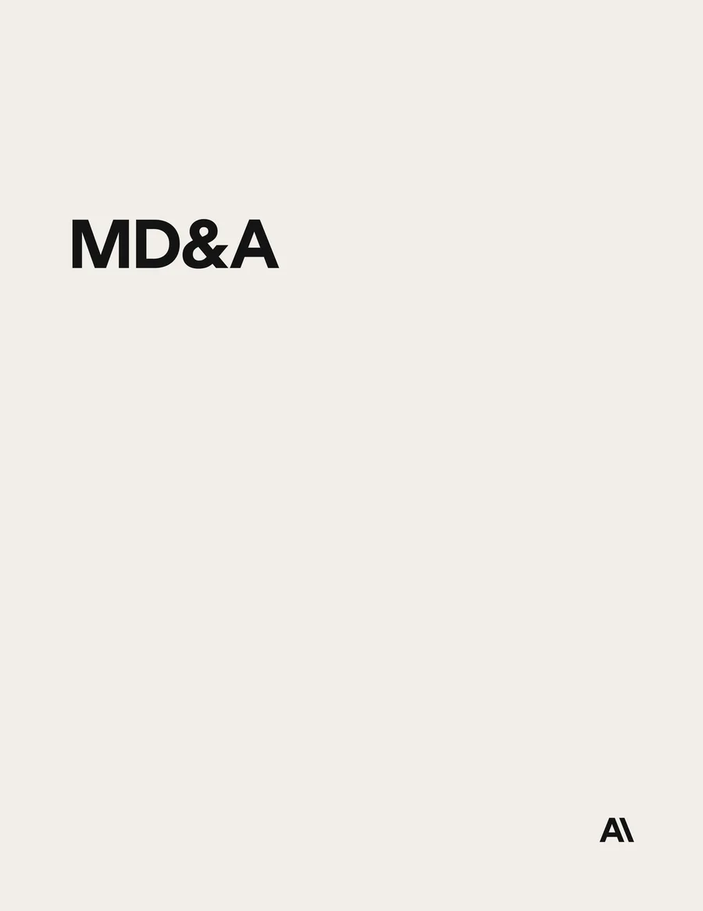
| MD&A | MD&A(경영진의 재무 상태 및 경영 성과 분석) |
| [logo mark "A\"] | [앤스로픽 로고 마크] |
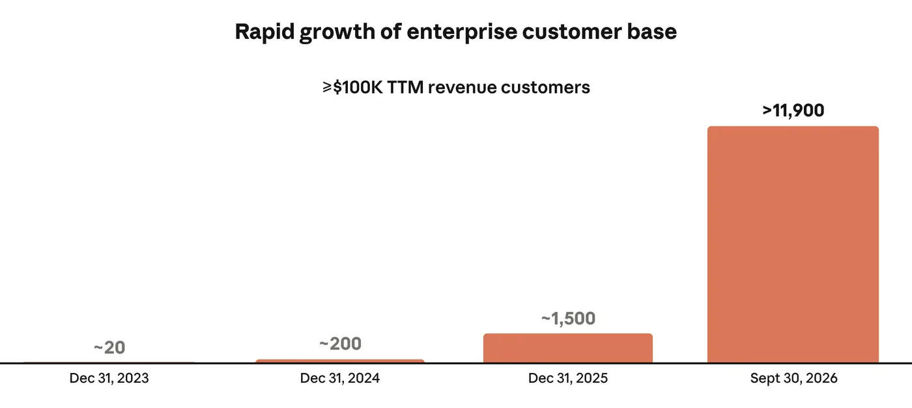
| Rapid growth of enterprise customer base | 기업 고객 기반의 빠른 성장 |
| ≥$100K TTM revenue customers | 최근 12개월(TTM) 매출 10만 달러 이상 고객 |
| ~20 | 약 20 |
| Dec 31, 2023 | 2023년 12월 31일 |
| ~200 | 약 200 |
| Dec 31, 2024 | 2024년 12월 31일 |
| ~1,500 | 약 1,500 |
| Dec 31, 2025 | 2025년 12월 31일 |
| >11,900 | 11,900 초과 |
| Sept 30, 2026 | 2026년 9월 30일 |
| 기준일 | 최근 12개월(TTM) 매출 10만 달러 이상 고객 수 |
|---|---|
| 2023년 12월 31일 | ~20 (약 20) |
| 2024년 12월 31일 | ~200 (약 200) |
| 2025년 12월 31일 | ~1,500 (약 1,500) |
| 2026년 9월 30일 | >11,900 (11,900 초과) |
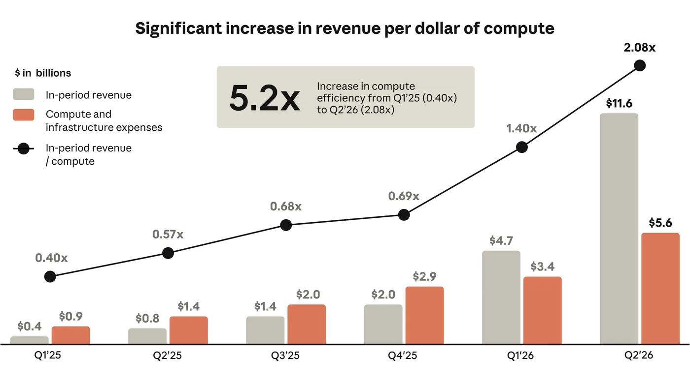
| Significant increase in revenue per dollar of compute | 컴퓨트 1달러당 매출의 큰 증가 |
| $ in billions | 단위: 십억 달러 |
| In-period revenue | 해당 기간 매출 |
| Compute and infrastructure expenses | 컴퓨트 및 인프라 비용 |
| In-period revenue / compute | 해당 기간 매출 ÷ 컴퓨트 비용 |
| 5.2x | 5.2배 |
| Increase in compute efficiency from Q1’25 (0.40x) to Q2’26 (2.08x) | 2025년 1분기(0.40배)에서 2026년 2분기(2.08배)까지 컴퓨트 효율 증가 |
| 0.40x | 0.40배 |
| $0.4 | 4억 달러(0.4십억) |
| $0.9 | 9억 달러(0.9십억) |
| Q1’25 | 2025년 1분기 |
| 0.57x | 0.57배 |
| $0.8 | 8억 달러(0.8십억) |
| $1.4 | 14억 달러(1.4십억) |
| Q2’25 | 2025년 2분기 |
| 0.68x | 0.68배 |
| $1.4 | 14억 달러(1.4십억) |
| $2.0 | 20억 달러(2.0십억) |
| Q3’25 | 2025년 3분기 |
| 0.69x | 0.69배 |
| $2.0 | 20억 달러(2.0십억) |
| $2.9 | 29억 달러(2.9십억) |
| Q4’25 | 2025년 4분기 |
| 1.40x | 1.40배 |
| $4.7 | 47억 달러(4.7십억) |
| $3.4 | 34억 달러(3.4십억) |
| Q1’26 | 2026년 1분기 |
| 2.08x | 2.08배 |
| $11.6 | 116억 달러(11.6십억) |
| $5.6 | 56억 달러(5.6십억) |
| Q2’26 | 2026년 2분기 |
| 분기 | 해당 분기 매출(십억 달러) | 컴퓨트 및 인프라 비용(십억 달러) | 매출 ÷ 컴퓨트(배) |
|---|---|---|---|
| 2025년 1분기 | $0.4 | $0.9 | 0.40x |
| 2025년 2분기 | $0.8 | $1.4 | 0.57x |
| 2025년 3분기 | $1.4 | $2.0 | 0.68x |
| 2025년 4분기 | $2.0 | $2.9 | 0.69x |
| 2026년 1분기 | $4.7 | $3.4 | 1.40x |
| 2026년 2분기 | $11.6 | $5.6 | 2.08x |
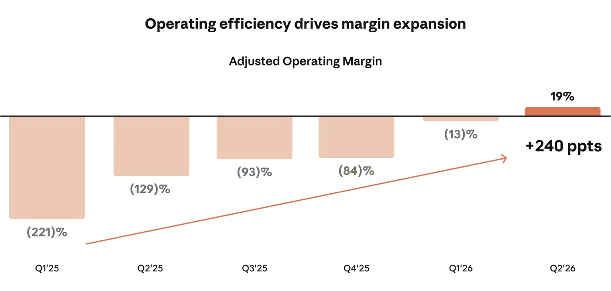
| Operating efficiency drives margin expansion | 운영 효율이 이익률 확대를 이끈다 |
| Adjusted Operating Margin | 조정 영업이익률 |
| (221)% | -221% |
| Q1’25 | 2025년 1분기 |
| (129)% | -129% |
| Q2’25 | 2025년 2분기 |
| (93)% | -93% |
| Q3’25 | 2025년 3분기 |
| (84)% | -84% |
| Q4’25 | 2025년 4분기 |
| (13)% | -13% |
| Q1’26 | 2026년 1분기 |
| 19% | 19% |
| Q2’26 | 2026년 2분기 |
| +240 ppts | +240%포인트 |
| 분기 | 조정 영업이익률 |
|---|---|
| 2025년 1분기 | (221)% |
| 2025년 2분기 | (129)% |
| 2025년 3분기 | (93)% |
| 2025년 4분기 | (84)% |
| 2026년 1분기 | (13)% |
| 2026년 2분기 | 19% |
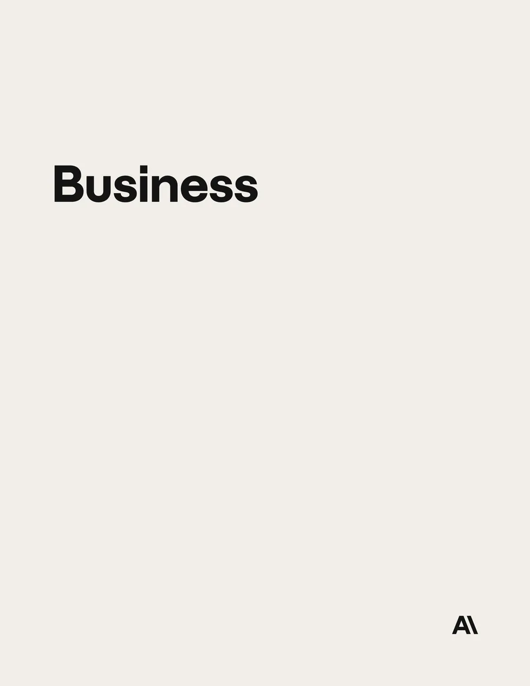
| Business | 사업 |
| [logo mark "A\"] | [앤스로픽 로고 마크] |
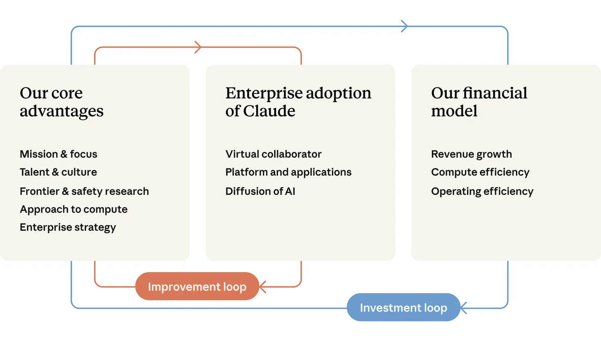
| Our core advantages | 우리의 핵심 강점 |
| Mission & focus | 사명과 집중 |
| Talent & culture | 인재와 문화 |
| Frontier & safety research | 최첨단 연구와 안전 연구 |
| Approach to compute | 컴퓨트에 대한 접근 방식 |
| Enterprise strategy | 기업 고객 전략 |
| Enterprise adoption of Claude | Claude의 기업 채택 |
| Virtual collaborator | 가상 협업자 |
| Platform and applications | 플랫폼과 애플리케이션 |
| Diffusion of AI | AI의 확산 |
| Our financial model | 우리의 재무 모델 |
| Revenue growth | 매출 성장 |
| Compute efficiency | 컴퓨트 효율 |
| Operating efficiency | 운영 효율 |
| Improvement loop | 개선 루프 |
| Investment loop | 투자 루프 |
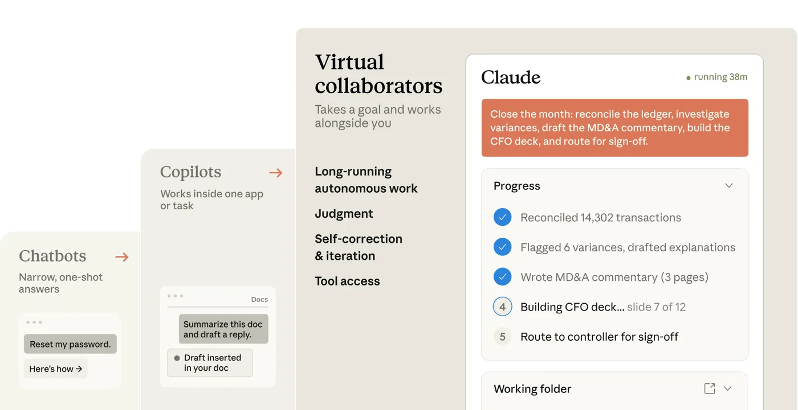
| Chatbots | 챗봇 |
| Narrow, one-shot answers | 좁은 범위의 한 번짜리 답변 |
| Reset my password. | 비밀번호를 재설정해 줘. |
| Here’s how → | 방법은 이렇습니다 → |
| Copilots | 코파일럿 |
| Works inside one app or task | 앱 하나 또는 작업 하나 안에서 일한다 |
| Docs | 문서 |
| Summarize this doc and draft a reply. | 이 문서를 요약하고 답장 초안을 써 줘. |
| Draft inserted in your doc | 문서에 초안을 넣었습니다 |
| Virtual collaborators | 가상 협업자 |
| Takes a goal and works alongside you | 목표를 받아 당신 곁에서 함께 일한다 |
| Long-running autonomous work | 오래 이어지는 자율 작업 |
| Judgment | 판단 |
| Self-correction & iteration | 스스로 고치고 반복하기 |
| Tool access | 도구 사용 권한 |
| Claude | Claude |
| running 38m | 38분째 실행 중 |
| Close the month: reconcile the ledger, investigate variances, draft the MD&A commentary, build the CFO deck, and route for sign-off. | 월 결산을 마쳐 줘: 원장을 대사하고, 차이를 조사하고, MD&A 해설 초안을 쓰고, CFO 보고 자료를 만들고, 승인 절차로 넘겨 줘. |
| Progress | 진행 상황 |
| Reconciled 14,302 transactions | 거래 14,302건 대사 완료 |
| Flagged 6 variances, drafted explanations | 차이 6건 표시, 설명 초안 작성 |
| Wrote MD&A commentary (3 pages) | MD&A 해설 작성(3쪽) |
| 4 | 4 |
| Building CFO deck... slide 7 of 12 | CFO 보고 자료 작성 중… 12장 중 7장째 |
| 5 | 5 |
| Route to controller for sign-off | 회계 책임자(컨트롤러)에게 승인 요청 |
| Working folder | 작업 폴더 |
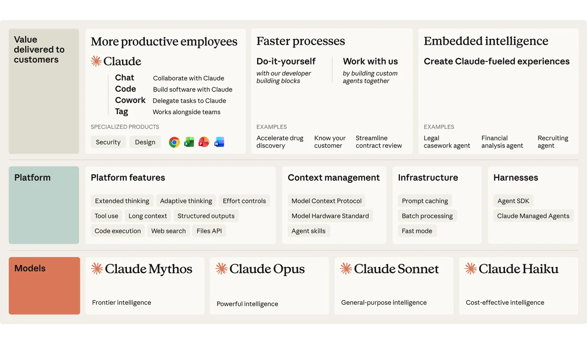
| Value delivered to customers | 고객에게 주는 가치 |
| More productive employees | 더 생산적인 직원 |
| Claude | Claude |
| Chat — Collaborate with Claude | Chat — Claude와 협업 |
| Code — Build software with Claude | Code — Claude로 소프트웨어 개발 |
| Cowork — Delegate tasks to Claude | Cowork — Claude에게 업무 위임 |
| Tag — Works alongside teams | Tag — 팀과 함께 일함 |
| SPECIALIZED PRODUCTS | 특화 제품 |
| Security | Security(보안) |
| Design | Design(디자인) |
| [four app icons: X, P, W and a browser icon] | [앱 아이콘 4개 — 브라우저 아이콘과 X·P·W 글자 아이콘] |
| Faster processes | 더 빠른 업무 처리 |
| Do-it-yourself | 직접 만들기 |
| with our developer building blocks | 우리의 개발자용 구성 요소로 |
| Work with us | 함께 만들기 |
| by building custom agents together | 맞춤형 에이전트를 함께 구축해서 |
| EXAMPLES | 예시 |
| Accelerate drug discovery | 신약 발굴 가속 |
| Know your customer | 고객 확인(KYC) |
| Streamline contract review | 계약 검토 간소화 |
| Embedded intelligence | 내장형 지능 |
| Create Claude-fueled experiences | Claude로 움직이는 서비스 경험 만들기 |
| EXAMPLES | 예시 |
| Legal casework agent | 법률 사건 처리 에이전트 |
| Financial analysis agent | 재무 분석 에이전트 |
| Recruiting agent | 채용 에이전트 |
| Platform | 플랫폼 |
| Platform features | 플랫폼 기능 |
| Extended thinking | 확장 사고(Extended thinking) |
| Adaptive thinking | 적응형 사고(Adaptive thinking) |
| Effort controls | 노력 수준 조절(Effort controls) |
| Tool use | 도구 사용(Tool use) |
| Long context | 긴 맥락(Long context) |
| Structured outputs | 구조화된 출력(Structured outputs) |
| Code execution | 코드 실행(Code execution) |
| Web search | 웹 검색(Web search) |
| Files API | Files API(파일 API) |
| Context management | 맥락 관리 |
| Model Context Protocol | Model Context Protocol(모델 맥락 프로토콜) |
| Model Hardware Standard | Model Hardware Standard(모델 하드웨어 표준) |
| Agent skills | Agent skills(에이전트 스킬) |
| Infrastructure | 인프라 |
| Prompt caching | 프롬프트 캐싱(Prompt caching) |
| Batch processing | 일괄 처리(Batch processing) |
| Fast mode | 빠른 모드(Fast mode) |
| Harnesses | 하네스(실행 틀) |
| Agent SDK | Agent SDK(에이전트 개발 도구) |
| Claude Managed Agents | Claude Managed Agents(Claude 관리형 에이전트) |
| Models | 모델 |
| Claude Mythos — Frontier intelligence | Claude Mythos — 최첨단 지능 |
| Claude Opus — Powerful intelligence | Claude Opus — 강력한 지능 |
| Claude Sonnet — General-purpose intelligence | Claude Sonnet — 범용 지능 |
| Claude Haiku — Cost-effective intelligence | Claude Haiku — 비용 효율적 지능 |
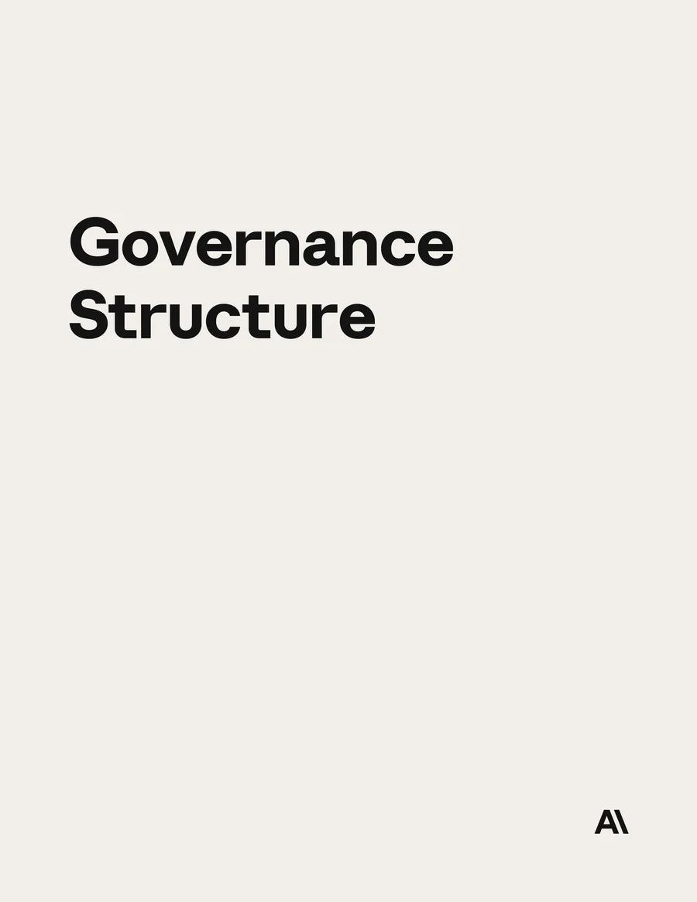
| Governance Structure | 지배구조 |
| [logo mark "A\"] | [앤스로픽 로고 마크] |
| ANTHROP\C | 앤스로픽 (워드마크 표기 ANTHROP\C) |
원문: Anthropic, PBC Form S-1 등록신고서(투자설명서) 수록 창업자 서한(영문). 서명: Dario Amodei · Daniela Amodei · Tom Brown · Jack Clark · Jared Kaplan · Sam McCandlish · Chris Olah. 그림·로고는 원문에 실린 것입니다. 해설은 번역자(Claude)가 원문과 주변 본문만으로 쓴 것이며 투자 권유가 아닙니다.